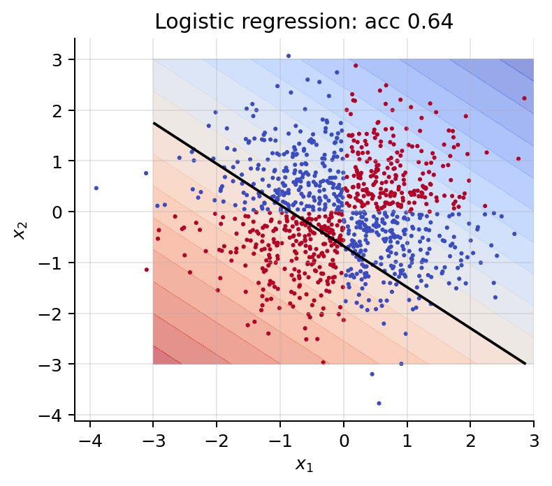
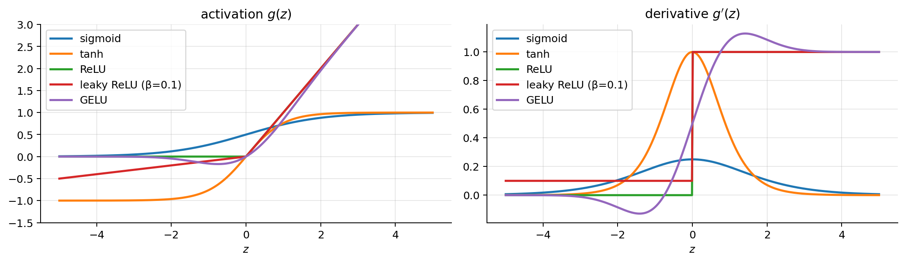
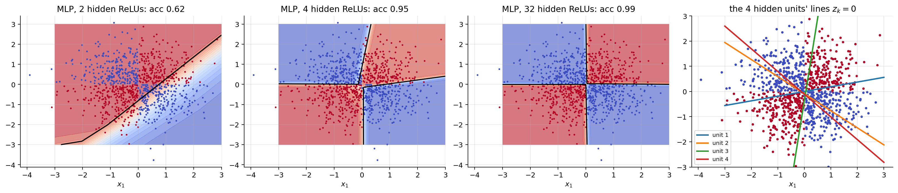
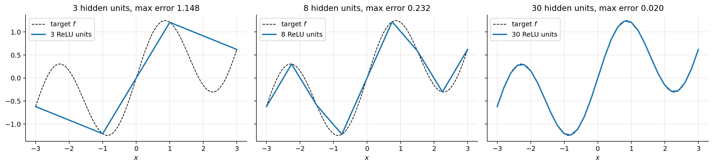
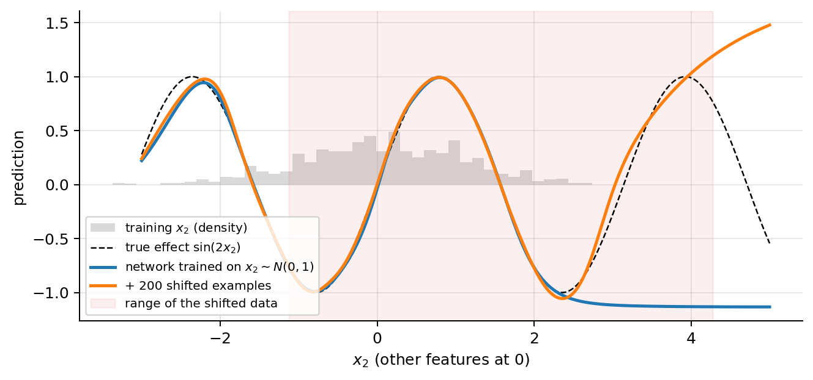
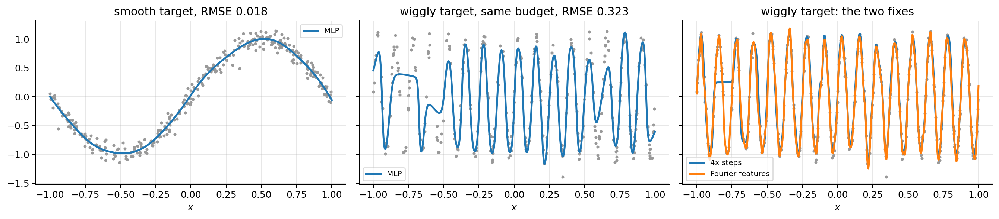
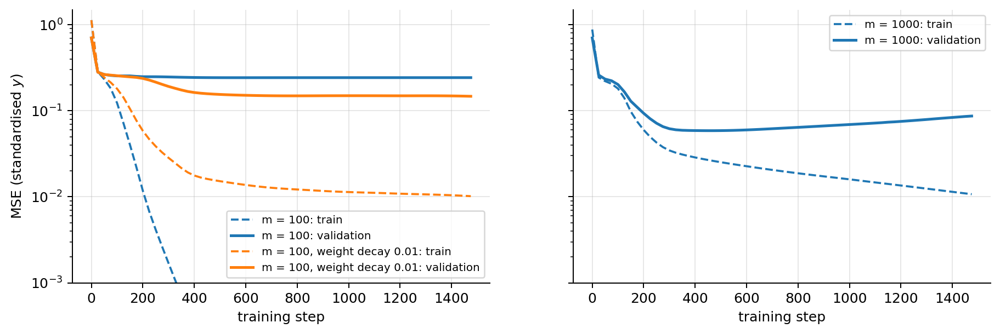
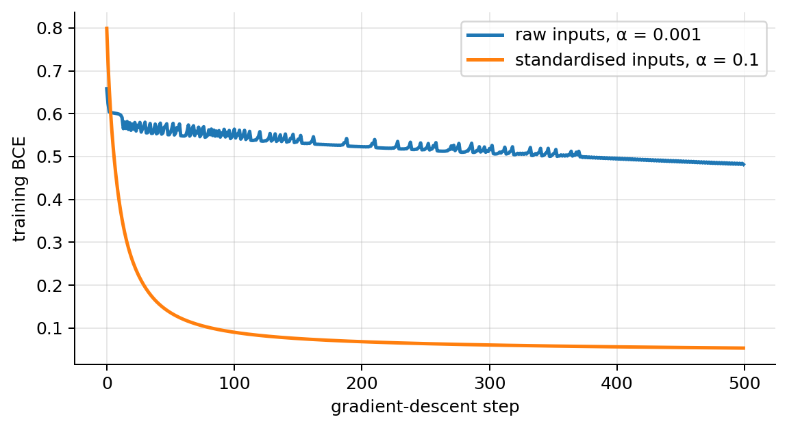
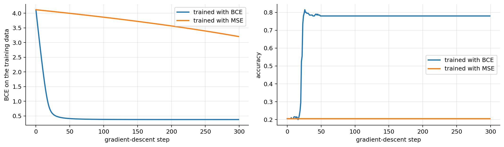
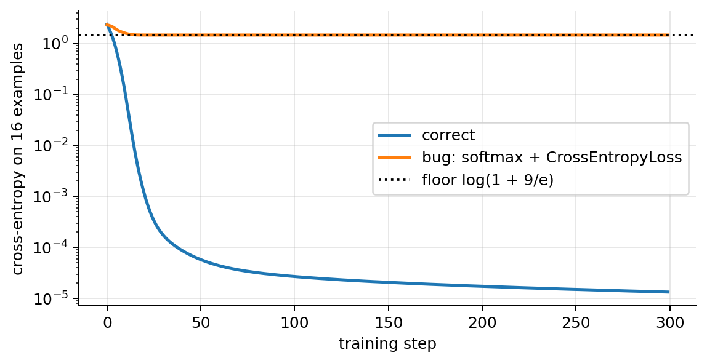

import numpy as np
import matplotlib.pyplot as plt
plt.rcParams.update({"figure.dpi": 90, "axes.grid": True, "grid.alpha": 0.3,
"axes.spines.top": False, "axes.spines.right": False})
rng = np.random.default_rng(0)00 · Neural Networks: from Logistic Regression to the MLP
A neural network is a stack of logistic-regression-like units whose features are learned instead of hand-designed. This note builds the model from a single neuron up to the multilayer perceptron (MLP), computes its forward pass by hand, chooses its output layer and loss by maximum likelihood, and ends with two long practical sections: what an MLP assumes about your data (and how to check it), and what to do in the situations people hit when they first train one. How to compute the gradients (backpropagation) is NN note 01; how to train well (mini-batches, optimisers, regularisation) is NN note 02.
What you need. Linear regression and gradient descent (ML note 01), logistic regression and the cross-entropy loss (ML note 02), generalised linear models (ML note 02b), feature scaling and hand-made features (ML note 03) and softmax regression (ML note 04). Every result used from those notes is restated where it is needed.
After this note you can
- compute a network’s output by hand, count its parameters and check the shapes of every matrix;
- explain why a hidden layer with a non-linear activation can solve problems (XOR, circles) that no linear model can;
- derive the activations’ derivatives and pick the output layer and loss for any type of target, and show that the gradient at the logits is always “prediction − target” for the matching pairs;
- check the assumptions an MLP makes (independent examples, a smooth target, enough data, scaled inputs, a matching loss) and run the sanity checks that catch most bugs before training.
Notation (same as the ML notes)
| Symbol | Meaning |
|---|---|
| \(m\), \(n\) | number of examples, number of input features |
| \(\mathbf{x}^{(i)}\), \(y^{(i)}\) | \(i\)-th input and target; \(\mathbf{X}\in\mathbb{R}^{m\times n}\) stacks the inputs as rows |
| \(\hat y\), \(\hat{\mathbf{Y}}\) | the network’s prediction for one example, for all examples |
| \(L\) | number of layers (hidden + output); \(n_l\) = number of units in layer \(l\), \(n_0 = n\) |
| \(\mathbf{W}^{[l]}\in\mathbb{R}^{n_{l-1}\times n_l}\), \(\mathbf{b}^{[l]}\in\mathbb{R}^{1\times n_l}\) | weights and bias of layer \(l\) |
| \(\mathbf{w} = \{\mathbf{W}^{[l]}, \mathbf{b}^{[l]}\}_{l=1}^L\) | all parameters of the network (weights and biases; called \(\boldsymbol{\theta}\) in the ML notes); \(P\) = how many numbers that is. In formulas such as \(w\leftarrow w-\alpha\,\partial J/\partial w\), \(w\) stands for any one of them |
| \(\mathbf{Z}^{[l]}, \mathbf{A}^{[l]}\) | pre-activation and activation of layer \(l\) (one row per example); \(\mathbf{A}^{[0]} = \mathbf{X}\) |
| \(g^{[l]}\), \(g'\) | activation function of layer \(l\) (applied element-wise) and its derivative |
| \(\sigma(z) = 1/(1+e^{-z})\) | the sigmoid (logistic) function |
| \(K\) | number of classes in a classification problem |
| \(J(\mathbf{w})\) | loss (averaged over the examples), \(\alpha\) learning rate |
Unlike the ML notes, the bias is kept as a separate vector \(\mathbf{b}\) instead of a column of ones in \(\mathbf{X}\). This is the convention of every deep learning library. For one example we write \(\mathbf{x}^\top\mathbf{w}\) with column vectors; inside layer formulas an example is a row \(\mathbf{x}\in\mathbb{R}^{1\times n}\), so that \(\mathbf{x}\mathbf{W}^{[1]}\) is \((1\times n)(n\times n_1)\), exactly like one row of \(\mathbf{X}\mathbf{W}^{[1]}\).
1. Why neural networks, and the plan of the course
Neural networks are behind speech assistants (speech recognition and synthesis), chatbots such as ChatGPT (transformers), fake-news detection (text classification), music composition (sequence generation), image colouring (image-to-image networks), robotics (perception and control), image captioning (an image encoder plus a language decoder), real-time object detection such as YOLO (“You Only Look Once”), text-to-image generation (Stable Diffusion) and chatbots that answer from your own documents (retrieval-augmented generation, RAG). Closer to insurance: assessing vehicle damage from photos means classifying the car parts, segmenting the damage and locating it with boxes, and it uses every block of the course together.
All of these are built from the same few blocks. The slides are organised in six chapters; each has a theory note:
| Chapter | Content | Note | Labs |
|---|---|---|---|
| 1 · Neurons and layers | a neuron is a logistic regression; stack them into an MLP; why the non-linearity matters | this note | |
| 2 · Forward and backward | how the prediction is computed and how every weight gets its gradient (backpropagation), with numbers | NN note 01 | Lab 7: an MLP from scratch in NumPy |
| 3 · Training | mini-batches, optimisers (momentum, Adam), learning-rate schedules, dropout, BatchNorm, the layer zoo | NN note 02 | Labs 8, 9 |
| 4 · Images: CNNs | convolutions, pooling, architectures, transfer learning, segmentation, detection | NN note 03 | Labs 10, 12, 13 + a multi-task demo |
| 5 · Sequences | embeddings, RNNs, LSTMs | NN note 04 | Lab 11 |
| 6 · Attention and transformers | every token looks at every other token; GPT, decoding, RAG | NN notes 05, 06 | Labs 14, 15 |
2. Why “neural”? The biological analogy
The brain is made of a huge number of small and (individually) simple neurons. Each one collects electrical signals from other neurons through its dendrites and “fires” along its axon when the total is strong enough. An artificial neural network is made of many small and simple units: each one computes a weighted sum of its inputs and applies a non-linear function to it.
The power does not come from any single unit but from connecting many of them in layers. The analogy with biology stops there: what we actually train is a big differentiable function, with the same tools as in the ML part of the course, a loss and gradient descent.
3. Problem statement
The problem is the supervised learning problem of ML note 00: given a training set \(\{(\mathbf{x}^{(i)}, y^{(i)})\}_{i=1}^m\), learn a function \(h\) so that \(h(\mathbf{x})\) is a “good” predictor of \(y\), where “good” means a small loss \(J\) averaged over the examples.
- \(y\) continuous → regression (a claim cost);
- \(y\) discrete → classification (fraud / not fraud, which car part);
- a combination of both (object detection predicts a box, four numbers, and the class of what is inside).
What changes with respect to the ML notes is the model family. In linear regression \(h\) is linear in \(\mathbf{x}\), and in logistic regression it is a sigmoid of a linear function. A neural network is a composition of many simple functions:
\[ h(\mathbf{x}) = g^{[L]}\Big(\cdots g^{[2]}\big(g^{[1]}(\mathbf{x}\mathbf{W}^{[1]}+\mathbf{b}^{[1]})\,\mathbf{W}^{[2]}+\mathbf{b}^{[2]}\big)\cdots\Big). \]
The features are no longer designed by hand: the inner layers learn them. The next sections build this formula one piece at a time.
4. One neuron
4.1 No activation: linear regression
The simplest network is a single neuron with no activation, and you already know it:
\[ \hat y = w_1x_1+\dots+w_nx_n+b = \mathbf{w}^\top\mathbf{x}+b . \]
New names for old things: the weights \(\mathbf{w}\) are the \(\theta_1,\dots,\theta_n\) of the ML notes and the bias \(b\) is \(\theta_0\). Trained by minimising the mean squared error with gradient descent, it is exactly the linear regression of ML note 01. Every neural network is built from this unit plus one extra ingredient: a non-linear activation applied to \(z = \mathbf{w}^\top\mathbf{x}+b\).
4.2 With a sigmoid: logistic regression is a neural network
A neuron computes a weighted sum of its inputs plus a bias, then applies an activation function \(g\):
\[ a = g(z), \qquad z = \mathbf{x}^\top\mathbf{w} + b = \sum_{j=1}^n w_jx_j + b . \]
With \(g = \sigma\) (sigmoid) and the cross-entropy loss, a single neuron is logistic regression (ML note 02): \(\mathbf{w}\) plays the role of \((\theta_1,\dots,\theta_n)\) and \(b\) of \(\theta_0\),
\[ \hat y = \sigma(\mathbf{w}^\top\mathbf{x}+b) = \frac{1}{1+e^{-(\mathbf{w}^\top\mathbf{x}+b)}} . \]
Every unit of a neural network does these two steps: a linear step \(z = \mathbf{w}^\top\mathbf{x}+b\) and an activation \(a = g(z)\). A single unit with a threshold output is Rosenblatt’s perceptron, hence the name “single-layer perceptron”. With \(g\) = identity and squared loss it is linear regression (section 4.1).
Three facts about the sigmoid, used again and again:
- Range. \(e^{-z} > 0\), so \(1 + e^{-z} > 1\) and \(0 < \sigma(z) < 1\): the output can be read as a probability, \(\hat y = P(y = 1\mid\mathbf{x})\). \(\sigma(0) = \frac{1}{1+1} = \frac12\).
- Symmetry. \(1 - \sigma(z) = \sigma(-z)\): \[ \begin{aligned} 1-\sigma(z) &= \frac{1+e^{-z}-1}{1+e^{-z}} \\ &\quad\small \text{common denominator}\\ &= \frac{e^{-z}}{1+e^{-z}} = \frac{1}{e^{z}+1} \\ &\quad\small \text{multiply top and bottom by } e^{z}\\ &= \sigma(-z). \\ &\quad\small \text{definition of }\sigma \end{aligned} \]
- Log-odds. Solving \(\hat y = \sigma(z)\) for \(z\): \(\hat y(1+e^{-z}) = 1 \Rightarrow e^{-z} = (1-\hat y)/\hat y \Rightarrow z = \log\frac{\hat y}{1-\hat y}\). The pre-activation \(z\) of a sigmoid unit is the log-odds (the logit) of the positive class.
Geometry. \(\hat y > \frac12 \iff z > 0\), so the decision boundary \(\mathbf{x}^\top\mathbf{w} + b = 0\) is a hyperplane (a line in 2-D) with normal vector \(\mathbf{w}\), and \(z/\lVert\mathbf{w}\rVert\) is the signed distance of \(\mathbf{x}\) to it. Positive weights “vote yes”, negative ones “vote no”, and the bias sets the threshold.
4.3 One neuron, with numbers
Inputs \(\mathbf{x} = (2,\,-1,\,0.5)\), weights \(\mathbf{w} = (0.4,\,-0.3,\,1.0)\), bias \(b = 0.1\).
\[ \begin{aligned} w_1x_1 &= 0.4\cdot 2 = 0.8, \qquad w_2x_2 = (-0.3)\cdot(-1) = 0.3, \qquad w_3x_3 = 1.0\cdot 0.5 = 0.5 \\ &\quad\small \text{multiply}\\ z &= 0.8 + 0.3 + 0.5 + 0.1 = 1.7 \\ &\quad\small \text{add, bias included}\\ e^{-1.7} &= 0.1827 \\ &\quad\small \text{exponential}\\ \hat y &= \sigma(1.7) = \frac{1}{1+0.1827} = \frac{1}{1.1827} = 0.846 \\ &\quad\small \text{activate} \end{aligned} \]
Two operations, always the same: a weighted sum (the weights are what we learn) and a squashing function. The whole of deep learning is this, repeated millions of times and arranged cleverly.
Try it. Step through the neuron: the products \(0.8\), \(0.3\), \(0.5\) appear on the edges, then the sum \(z = 1.7\) and finally the output \(\sigma(1.7) = 0.846\).
sigmoid = lambda z: 1 / (1 + np.exp(-z))
x_n, w_n, b_n = np.array([2.0, -1.0, 0.5]), np.array([0.4, -0.3, 1.0]), 0.1
products = w_n * x_n
z_n = products.sum() + b_n
print("products w_j x_j:", products, " z =", round(z_n, 3))
print(f"e^(-z) = {np.exp(-z_n):.4f} y_hat = sigma(z) = {sigmoid(z_n):.4f}")products w_j x_j: [0.8 0.3 0.5] z = 1.7
e^(-z) = 0.1827 y_hat = sigma(z) = 0.84555. Several classes: a layer of neurons
With \(K\) classes, put \(K\) neurons side by side, each with its own weights. Each produces one score (logit) per class,
\[ z_k = \mathbf{w}_k^\top\mathbf{x} + b_k, \qquad k = 1,\dots,K, \]
and the softmax turns the scores into probabilities, \(\hat y_k = e^{z_k}/\sum_{j=1}^K e^{z_j}\) (section 20). All the weights together form a matrix whose column \(k\) is \(\mathbf{w}_k\): \(\mathbf{z} = \mathbf{x}\mathbf{W} + \mathbf{b}\) with \(\mathbf{W}\in\mathbb{R}^{n\times K}\). This is the softmax regression of ML note 04.
Still linear. The network predicts class \(k\) over class \(j\) when \(\hat y_k > \hat y_j\):
\[ \begin{aligned} \hat y_k > \hat y_j &\iff \frac{e^{z_k}}{S} > \frac{e^{z_j}}{S} \\ &\quad\small S = \textstyle\sum_l e^{z_l} > 0 \text{ is the same for both}\\ &\iff z_k > z_j \\ &\quad\small e^{t}\text{ is strictly increasing}\\ &\iff (\mathbf{w}_k-\mathbf{w}_j)^\top\mathbf{x} + (b_k - b_j) > 0 . \\ &\quad\small \text{substitute } z_k, z_j \end{aligned} \]
So the border between two classes is the hyperplane \((\mathbf{w}_k-\mathbf{w}_j)^\top\mathbf{x} + (b_k-b_j) = 0\), and the region where class \(k\) wins is an intersection of \(K-1\) half-spaces: a convex polygon with straight sides. One layer, however wide, cannot draw curved borders.
6. The limit of linear models: XOR
XOR (“exclusive or”: one or the other, not both) on the four corners of the unit square: \((1,0)\) and \((0,1)\) are class 1 (blue in the figure), \((0,0)\) and \((1,1)\) are class 0 (orange).
Claim. No line \(w_1x_1 + w_2x_2 + b = 0\) separates them.
Proof. Suppose the score \(s(\mathbf{x}) = w_1x_1 + w_2x_2 + b\) is positive exactly on class 1.
\[ \begin{aligned} &(0,0) \text{ is class 0:} \\ &\quad\small s(0,0) = b \le 0\\ &(1,0),\ (0,1) \text{ are class 1:} \\ &\quad\small w_1 + b > 0 \ \text{ and } \ w_2 + b > 0\\ &\text{add the two:} \\ &\quad\small w_1 + w_2 + 2b > 0 \ \Rightarrow\ w_1 + w_2 + b > -b \ge 0 \quad(\text{using } b\le 0)\\ &(1,1) \text{ is class 0:} \\ &\quad\small w_1 + w_2 + b \le 0 . \quad\text{Contradiction.} \ \blacksquare \end{aligned} \]
The same problem centred at the origin: four points with labels \(y = \mathbb{1}[x_1x_2 > 0]\),
| \(x_1\) | \(x_2\) | \(y\) |
|---|---|---|
| \(+1\) | \(+1\) | 1 |
| \(-1\) | \(-1\) | 1 |
| \(+1\) | \(-1\) | 0 |
| \(-1\) | \(+1\) | 0 |
Claim. No linear classifier \(\hat{y} = \mathbb{1}[w_1x_1 + w_2x_2 + b > 0]\) gets all four right.
Proof. The two positive points need \(b + w_1 + w_2 > 0\) and \(b - w_1 - w_2 > 0\). Adding them gives \(2b > 0\). The two negative points need \(b + w_1 - w_2 \le 0\) and \(b - w_1 + w_2 \le 0\). Adding them gives \(2b \le 0\). Contradiction. \(\blacksquare\)
XOR is the simplest problem where a single neuron fails. Logistic regression on XOR-like data (a cloud of points labelled by the sign of \(x_1x_2\)) therefore stays near 50 % accuracy, however long it trains. There are two ways out: invent new features by hand (section 7), or let the network learn them (section 8).
from sklearn.linear_model import LogisticRegression
m = 1000
X = rng.normal(size=(m, 2)); y = (X[:, 0] * X[:, 1] > 0).astype(int)
g1, g2 = np.meshgrid(np.linspace(-3, 3, 300), np.linspace(-3, 3, 300)); G = np.c_[g1.ravel(), g2.ravel()]
def plot_boundary(ax, predict_proba, title):
P = predict_proba(G).reshape(g1.shape)
ax.contourf(g1, g2, P, levels=20, cmap="coolwarm", alpha=0.6); ax.contour(g1, g2, P, levels=[0.5], colors="k")
ax.scatter(X[:, 0], X[:, 1], c=y, cmap="coolwarm", s=6, edgecolor="none"); ax.set_title(title)
lr = LogisticRegression().fit(X, y)
fig, ax = plt.subplots(figsize=(4.5, 4))
plot_boundary(ax, lambda A: lr.predict_proba(A)[:, 1], f"Logistic regression: acc {lr.score(X, y):.2f}")
ax.set_xlabel("$x_1$"); ax.set_ylabel("$x_2$"); plt.tight_layout(); plt.show()
7. Fix 1: engineer new features by hand
In ML note 03 non-linear data was fixed by adding features by hand. Two examples:
- Circle data. Class 1 lies inside the circle \(x_1^2 + x_2^2 < r^2\), and no line separates the classes in the \((x_1, x_2)\) plane. With the new features \(u_1 = x_1^2\), \(u_2 = x_2^2\) the border becomes \(u_1 + u_2 = r^2\), a straight line in the \((u_1, u_2)\) plane, so logistic regression on \((u_1, u_2)\) solves it.
- XOR. The product feature \(x_1x_2\) does the job. On the four corners the formula \(\hat y = x_1 + x_2 - 2x_1x_2\), linear in the features \((x_1, x_2, x_1x_2)\), is exactly XOR:
| \(x_1\) | \(x_2\) | \(x_1 + x_2 - 2x_1x_2\) | XOR |
|---|---|---|---|
| 0 | 0 | \(0 + 0 - 0 = 0\) | 0 |
| 1 | 0 | \(1 + 0 - 0 = 1\) | 1 |
| 0 | 1 | \(0 + 1 - 0 = 1\) | 1 |
| 1 | 1 | \(1 + 1 - 2 = 0\) | 0 |
Xc = rng.uniform(-1, 1, size=(600, 2)); yc = (Xc[:, 0]**2 + Xc[:, 1]**2 < 0.42).astype(int) # r^2 = 0.42, as on the slide
acc_raw = LogisticRegression().fit(Xc, yc).score(Xc, yc)
acc_sq = LogisticRegression(C=100).fit(Xc**2, yc).score(Xc**2, yc)
X_prod = np.c_[X, X[:, 0] * X[:, 1]] # XOR cloud + the product feature
acc_prod = LogisticRegression(C=100).fit(X_prod, y).score(X_prod, y)
print(f"circle, features (x1, x2): accuracy {acc_raw:.3f} (the majority class is {max(yc.mean(), 1 - yc.mean()):.3f})")
print(f"circle, features (x1^2, x2^2): accuracy {acc_sq:.3f}")
print(f"XOR cloud, features (x1, x2, x1x2): accuracy {acc_prod:.3f}")circle, features (x1, x2): accuracy 0.645 (the majority class is 0.645)
circle, features (x1^2, x2^2): accuracy 0.995
XOR cloud, features (x1, x2, x1x2): accuracy 0.991On the raw features the circle defeats logistic regression: its accuracy 0.645 is exactly the share of the majority class, i.e. it learned nothing. On the squared features it reaches 0.995, and the product feature takes the XOR cloud from about 50 % (section 6) to 0.991.
But you must guess the right features. For a \(224\times224\) colour photo, \(224\cdot224\cdot3 = 150{,}528\) pixel values: which formula of them means “cat”, or “dented bumper”? Nobody knows. Fix 2 lets the model learn useful features from the data, and that is exactly what a hidden layer does.
9. The multilayer perceptron
Stack a hidden layer of logistic regressions and an output logistic regression. For the 3-4-1 network of the figure (3 inputs, 4 hidden units, 1 output), unit \(j\) of the hidden layer computes
\[ a_j = \sigma\big(\mathbf{W}^{[1]\top}_{:,j}\mathbf{x} + b^{[1]}_j\big) = \sigma\Big(\sum_{i=1}^3 W^{[1]}_{ij}x_i + b^{[1]}_j\Big), \qquad j = 1,\dots,4, \]
and the output is \(h(\mathbf{x}) = \sigma\big(\mathbf{W}^{[2]\top}\mathbf{a} + b^{[2]}\big)\) with \(\mathbf{a} = (a_1,\dots,a_4)\). Column \(j\) of \(\mathbf{W}^{[1]}\) holds the weights of hidden unit \(j\); the superscript \([l]\) is the layer number.
- Each hidden unit is a logistic regression on the inputs. The output is a logistic regression on the hidden units.
- Parameters: \(3\cdot4 + 4 = 16\) in layer 1 (12 weights, 4 biases) and \(4\cdot1 + 1 = 5\) in layer 2, 21 in total.
- “Fully connected” or “dense”: every unit sees every unit of the previous layer.
10. Going deeper: features of features
Add a second hidden layer. A 2-4-4-1 network (two hidden layers of 4 tanh units) computes
\[ \mathbf{a}^{[1]} = g(\mathbf{x}\mathbf{W}^{[1]}+\mathbf{b}^{[1]}), \qquad \mathbf{a}^{[2]} = g(\mathbf{a}^{[1]}\mathbf{W}^{[2]}+\mathbf{b}^{[2]}), \qquad \hat y = \sigma(\mathbf{a}^{[2]}\mathbf{W}^{[3]}+b^{[3]}). \]
The figure shows such a network trained on the circle data; each heat map is one unit’s value over the whole plane. Layer 1 draws lines (soft walls), layer 2 combines lines into curved regions, and the output combines regions into a closed decision region. More layers give more complex shapes with fewer units. On images the same happens with pixels → edges → textures → parts → objects (NN note 03). That is the deep in deep learning.
11. The neural-network family of this course
All the networks of the course are layers of weighted sums + non-linearities, trained with a loss and gradient descent. What changes is how the units are wired, to match the structure of the data:
| Network | Input | Assumed structure | Note |
|---|---|---|---|
| MLP | a vector of numbers | none: every unit sees every input | this note, NN notes 01–02 |
| CNN | an image (a grid) | nearby pixels go together; a pattern can appear anywhere | NN note 03 |
| RNN / LSTM | a sequence | order matters; keep a running memory | NN note 04 |
| Transformer | a sequence of tokens | any token can relate to any other, all in parallel | NN note 05 |
12. The forward pass, with numbers
The forward pass feeds the input through the layers, left to right, storing every intermediate value. The tiny 2-2-1 network used here and in NN note 01 has a tanh hidden layer and a sigmoid output, one example \(\mathbf{x} = (1, 2)\) with label \(y = 1\), and weights chosen by hand (they would normally be random):
\[ \mathbf{W}^{[1]} = \begin{pmatrix}0.5 & -0.3\\ 0.2 & 0.4\end{pmatrix}, \quad \mathbf{b}^{[1]} = (0.1,\,-0.1), \quad \mathbf{W}^{[2]} = \begin{pmatrix}0.7\\ -0.5\end{pmatrix}, \quad b^{[2]} = 0.2 . \]
Row \(i\) of \(\mathbf{W}^{[1]}\) holds the weights leaving input \(x_i\); column \(j\) holds the weights entering hidden unit \(j\). The network has \(2\cdot2 + 2 + 2\cdot1 + 1 = 9\) parameters.
\[ \begin{aligned} z^{[1]}_1 &= x_1W^{[1]}_{11} + x_2W^{[1]}_{21} + b^{[1]}_1 = 1\cdot0.5 + 2\cdot0.2 + 0.1 = 1.000 \\ &\quad\small \text{hidden, linear step}\\ z^{[1]}_2 &= x_1W^{[1]}_{12} + x_2W^{[1]}_{22} + b^{[1]}_2 = 1\cdot(-0.3) + 2\cdot0.4 - 0.1 = 0.400\\ a^{[1]}_1 &= \tanh(1.0) = 0.762, \qquad a^{[1]}_2 = \tanh(0.4) = 0.380 \\ &\quad\small \text{hidden, activation}\\ z^{[2]} &= 0.762\cdot0.7 + 0.380\cdot(-0.5) + 0.2 = 0.533 - 0.190 + 0.2 = 0.543 \\ &\quad\small \text{output, linear step}\\ \hat y &= \sigma(0.543) = 0.633 \\ &\quad\small \text{output, activation}\\ J &= -\log\hat y = -\log 0.633 = 0.458 \\ &\quad\small \text{cross-entropy with } y = 1 \end{aligned} \]
The two numbers \((0.762, 0.380)\) are the learned features of this example. The network says “63 % chance of class 1”: not terrible, not great. NN note 01 computes how to change each of the 9 parameters to lower the loss.
Try it. Step through the forward pass: the linear step gives \(\mathbf{z}^{[1]} = (1.000, 0.400)\), the tanh gives \((0.762, 0.380)\), the output logit is \(0.543\), the prediction \(0.633\) and the loss \(0.458\).
x_t, y_t = np.array([[1.0, 2.0]]), 1.0
W1_t, b1_t = np.array([[0.5, -0.3], [0.2, 0.4]]), np.array([[0.1, -0.1]])
W2_t, b2_t = np.array([[0.7], [-0.5]]), np.array([[0.2]])
Z1_t = x_t @ W1_t + b1_t; A1_t = np.tanh(Z1_t) # hidden layer
Z2_t = A1_t @ W2_t + b2_t; A2_t = sigmoid(Z2_t) # output layer
print("z1 =", Z1_t.round(3), " a1 =", A1_t.round(3))
print(f"z2 = {Z2_t.item():.3f} y_hat = {A2_t.item():.3f} loss = {-np.log(A2_t.item()):.3f}")
print("parameters:", W1_t.size + b1_t.size + W2_t.size + b2_t.size)z1 = [[1. 0.4]] a1 = [[0.762 0.38 ]]
z2 = 0.543 y_hat = 0.633 loss = 0.458
parameters: 913. Matrix notation and shapes
An MLP (fully connected feed-forward network) stacks \(L\) layers. Forward propagation, for the whole batch of \(m\) examples at once (the examples are the rows of \(\mathbf{X}\)):
\[ \mathbf{A}^{[0]} = \mathbf{X}, \qquad \mathbf{Z}^{[l]} = \mathbf{A}^{[l-1]}\mathbf{W}^{[l]} + \mathbf{b}^{[l]}, \qquad \mathbf{A}^{[l]} = g^{[l]}\big(\mathbf{Z}^{[l]}\big), \qquad l = 1,\dots,L, \]
and the prediction is \(\hat{\mathbf{Y}} = \mathbf{A}^{[L]}\). (The bias row \(\mathbf{b}^{[l]}\) is added to every row: “broadcasting”.)
Shapes: \(\mathbf{A}^{[l-1]}\) is \(m\times n_{l-1}\), \(\mathbf{W}^{[l]}\) is \(n_{l-1}\times n_l\), \(\mathbf{b}^{[l]}\) is \(1\times n_l\), so \(\mathbf{Z}^{[l]}\) and \(\mathbf{A}^{[l]}\) are \(m\times n_l\). Checking shapes is the fastest way to debug a network. The whole forward pass is \(L\) matrix products and \(L\) element-wise functions, exactly what GPUs are fast at.
Number of parameters: layer \(l\) has \(n_{l-1}n_l\) weights and \(n_l\) biases, so
\[ P = \sum_{l=1}^L (n_{l-1}n_l + n_l) = \sum_{l=1}^L (n_{l-1}+1)\,n_l . \]
Example: a 784 → 128 → 10 network (the Fashion-MNIST lab) has \(785\cdot128 + 129\cdot10 = 100{,}480 + 1{,}290 = 101{,}770\) parameters.
The network is just a composed function \(h_{\mathbf{w}}(\mathbf{x}) = g^{[L]}\big(\cdots g^{[1]}(\mathbf{x}\mathbf{W}^{[1]} + \mathbf{b}^{[1]})\cdots\big)\).
def init_params(sizes, rng):
"""sizes = [n0, n1, ..., nL]; random weights with variance 2/n_in (NN note 01), zero biases."""
return [(rng.normal(0, np.sqrt(2 / a), (a, b)), np.zeros((1, b))) for a, b in zip(sizes[:-1], sizes[1:])]
def forward(X, params, g_hidden, g_out):
A = X
for l, (W, b) in enumerate(params):
Z = A @ W + b
A = g_out(Z) if l == len(params) - 1 else g_hidden(Z)
return A
params = init_params([2, 16, 16, 1], rng)
for l, (W, b) in enumerate(params, 1):
print(f"layer {l}: W {W.shape}, b {b.shape}")
print("parameters:", sum(W.size + b.size for W, b in params))
print("output for 3 inputs (random, untrained net):", forward(X[:3], params, relu, sigmoid).ravel().round(3))layer 1: W (2, 16), b (1, 16)
layer 2: W (16, 16), b (1, 16)
layer 3: W (16, 1), b (1, 1)
parameters: 337
output for 3 inputs (random, untrained net): [0.522 0.456 0.323]Some books write one example as a column and a layer as \(\mathbf{z} = \mathbf{W}\mathbf{x} + \mathbf{b}\): the same thing, transposed. The row convention matches PyTorch, whose nn.Linear(in_features=n, out_features=h) stores its weight as an \(h\times n\) matrix and computes \(\mathbf{x}\mathbf{W}_{\text{torch}}^\top + \mathbf{b}\), so our \(\mathbf{W}^{[l]}\) is PyTorch’s weight.T:
import torch, torch.nn as nn
torch.manual_seed(0)
lin = nn.Linear(in_features=3, out_features=4)
xb = torch.randn(5, 3) # a batch of m = 5 examples, n = 3 features
print("weight:", tuple(lin.weight.shape), " bias:", tuple(lin.bias.shape), " output:", tuple(lin(xb).shape))
print("lin(x) equals x @ weight.T + bias:", torch.allclose(lin(xb), xb @ lin.weight.T + lin.bias))weight: (4, 3) bias: (4,) output: (5, 4)
lin(x) equals x @ weight.T + bias: True14. Activation functions and their derivatives
Activation layers apply a non-linearity, element by element. They must be fast to compute and have fast-to-compute derivatives, because gradient descent needs \(g'\) at every unit (NN note 01). Here \(g'(z)=\partial a/\partial z\) is the derivative of the output \(a=g(z)\) with respect to its input \(z\). For the sigmoid and tanh it can be written with the stored output (\(\sigma'=a(1-a)\), \(\tanh'=1-a^2\)), so the forward pass already gives it.
| Name | \(g(z)\) | \(g'(z)\) | Range | Use it for |
|---|---|---|---|---|
| Sigmoid | \(\sigma(z) = \frac{1}{1+e^{-z}}\) | \(\sigma(z)(1-\sigma(z)) \le \frac14\) | \((0,1)\) | output of binary classification; gates (NN note 04); saturates → vanishing gradients in hidden layers |
| tanh | \(\frac{e^z - e^{-z}}{e^z + e^{-z}} = 2\sigma(2z) - 1\) | \(1 - \tanh^2(z) \le 1\) | \((-1,1)\) | small nets, RNN hidden state; zero-centred; still saturates |
| ReLU | \(\max(0, z)\) | \(\mathbb{1}[z > 0]\) | \([0,\infty)\) | default for hidden layers (MLP, CNN): cheap, no saturation for \(z>0\); units can “die” (always \(z<0\), section 25.3) |
| Leaky ReLU | \(\max(\beta z, z)\), \(\beta\approx0.01\)–\(0.2\) | \(1\) or \(\beta\) | \(\mathbb{R}\) | when many ReLUs die: never fully dead |
| GELU | \(z\,\Phi(z)\), \(\Phi\) = standard normal CDF | \(\Phi(z) + z\,\varphi(z)\) | \(\approx[-0.17,\infty)\) | transformers (a smooth ReLU) |
| Linear | \(z\) | \(1\) | \(\mathbb{R}\) | output of regression only (section 15) |
Try it. Switch between the activations: the blue curve is \(g(z)\) and the red dashed one \(g'(z)\). The sigmoid’s derivative peaks at \(\frac14\), tanh’s at 1, ReLU’s is a step from 0 to 1, and the linear activation has constant derivative 1.
Derivative of the sigmoid, \(\sigma(z) = (1+e^{-z})^{-1}\):
\[ \begin{aligned} \sigma'(z) &= -(1+e^{-z})^{-2}\cdot\frac{d}{dz}(1+e^{-z}) \\ &\quad\small \text{chain rule on } u^{-1}\\ &= -(1+e^{-z})^{-2}\cdot(-e^{-z}) = \frac{e^{-z}}{(1+e^{-z})^2} \\ &\quad\small \tfrac{d}{dz}e^{-z} = -e^{-z}\\ &= \underbrace{\frac{1}{1+e^{-z}}}_{\sigma(z)}\cdot\underbrace{\frac{e^{-z}}{1+e^{-z}}}_{1-\sigma(z)} \\ &\quad\small \text{split the fraction; section 4.2}\\ &= \sigma(z)\big(1-\sigma(z)\big). \end{aligned} \]
Its maximum: \(s(1-s)\) with \(s = \sigma(z)\in(0,1)\) has derivative \(1 - 2s\), zero at \(s = \frac12\), i.e. \(z = 0\), where \(\sigma'(0) = \frac12\cdot\frac12 = \frac14\). So \(\boxed{\sigma'(z)\le\frac14}\) for every \(z\).
Derivative of tanh, \(\tanh z = \dfrac{e^z-e^{-z}}{e^z+e^{-z}}\), by the quotient rule \((u/v)' = (u'v - uv')/v^2\) with \(u = e^z - e^{-z}\), \(u' = e^z + e^{-z} = v\), \(v' = e^z - e^{-z} = u\):
\[ \begin{aligned} \tanh'z &= \frac{(e^z+e^{-z})^2-(e^z-e^{-z})^2}{(e^z+e^{-z})^2} \\ &\quad\small \text{quotient rule}\\ &= 1-\frac{(e^z-e^{-z})^2}{(e^z+e^{-z})^2} \\ &\quad\small \text{split the fraction}\\ &= 1-\tanh^2z , \\ &\quad\small \text{definition of tanh} \end{aligned} \]
with maximum \(1\) at \(z = 0\). Proof that \(\tanh(z) = 2\sigma(2z) - 1\): \(2\sigma(2z) - 1 = \frac{2}{1+e^{-2z}} - 1 = \frac{1-e^{-2z}}{1+e^{-2z}}\); multiply numerator and denominator by \(e^z\) to get \(\frac{e^z - e^{-z}}{e^z + e^{-z}}\). So tanh is a sigmoid stretched to \((-1,1)\) and centred at 0.
ReLU, \(\max(0,z)\): a line of slope 0, then a line of slope 1, so \(\mathrm{ReLU}'(z) = 1\) for \(z>0\) and \(0\) for \(z<0\). It is not differentiable at \(z = 0\); libraries use a sub-derivative there (PyTorch uses 0). It never matters in practice, because an exact 0 almost never happens. Leaky ReLU has slope \(\beta\) (0.01–0.2) instead of 0 for \(z<0\). GELU by the product rule: \(\frac{d}{dz}\big[z\Phi(z)\big] = \Phi(z) + z\varphi(z)\), with \(\varphi = \Phi'\) the standard normal density.
Two things to remember. (1) The derivatives can be written with the output \(a = g(z)\): \(a(1-a)\) for the sigmoid, \(1-a^2\) for tanh, \(\mathbb{1}[a>0]\) for ReLU. Backpropagation reuses the \(a\) it stored in the forward pass. (2) \(\sigma'\le\frac14\) always shrinks the gradient, while ReLU lets it through unchanged for \(z > 0\).
Saturation. Where the curve is flat (\(|z|\) large for sigmoid/tanh), \(g'(z)\approx0\). In backpropagation every layer multiplies the gradient by \(g'\) (NN note 01), so flat regions stop learning. ReLU’s derivative is exactly 1 for \(z>0\).
from scipy.stats import norm
z = np.linspace(-5, 5, 500)
acts = {"sigmoid": (sigmoid(z), sigmoid(z) * (1 - sigmoid(z))),
"tanh": (np.tanh(z), 1 - np.tanh(z) ** 2),
"ReLU": (relu(z), (z > 0).astype(float)),
"leaky ReLU (β=0.1)": (np.maximum(0.1 * z, z), np.where(z > 0, 1, 0.1)),
"GELU": (z * norm.cdf(z), norm.cdf(z) + z * norm.pdf(z))}
fig, axes = plt.subplots(1, 2, figsize=(12, 3.6))
for name, (f, d) in acts.items():
axes[0].plot(z, f, lw=2, label=name); axes[1].plot(z, d, lw=2, label=name)
axes[0].set_title("activation $g(z)$"); axes[1].set_title("derivative $g'(z)$"); axes[0].set_ylim(-1.5, 3)
for ax in axes: ax.legend(); ax.set_xlabel("$z$")
plt.tight_layout(); plt.show()
zg = np.linspace(-3, 0, 30001); gelu = zg * norm.cdf(zg)
print(f"sigma'(0) = {sigmoid(0) * (1 - sigmoid(0)):.3f} sigma'(5) = {sigmoid(5) * (1 - sigmoid(5)):.4f} "
f"tanh'(3) = {1 - np.tanh(3)**2:.4f} min GELU = {gelu.min():.3f} at z = {zg[gelu.argmin()]:.2f}")
sigma'(0) = 0.250 sigma'(5) = 0.0066 tanh'(3) = 0.0099 min GELU = -0.170 at z = -0.75At \(z = 5\) the sigmoid passes on less than 1 % of the gradient it receives (\(\sigma'(5) = 0.0066\)), and tanh at \(z = 3\) about 1 % (\(0.0099\)).
15. Why the activation must be non-linear
The linear activation \(g(z) = z\) is only used in the last layer of a regression problem. Why not in hidden layers?
Claim. Without non-linear activations, any number of layers collapses to a single linear layer.
Proof. With \(g\) = identity in the hidden layer,
\[ \begin{aligned} \mathbf{A}^{[2]} &= \big(\mathbf{X}\mathbf{W}^{[1]} + \mathbf{b}^{[1]}\big)\mathbf{W}^{[2]} + \mathbf{b}^{[2]} \\ &\quad\small \text{two layers, no activation}\\ &= \mathbf{X}\mathbf{W}^{[1]}\mathbf{W}^{[2]} + \mathbf{b}^{[1]}\mathbf{W}^{[2]} + \mathbf{b}^{[2]} \\ &\quad\small \text{distribute}\\ &= \mathbf{X}\underbrace{\mathbf{W}^{[1]}\mathbf{W}^{[2]}}_{\tilde{\mathbf{W}}} + \underbrace{\mathbf{b}^{[1]}\mathbf{W}^{[2]} + \mathbf{b}^{[2]}}_{\tilde{\mathbf{b}}}, \\ &\quad\small \text{associativity of the matrix product} \end{aligned} \]
which is one affine layer. By induction (apply the same step to the first two layers of an \(L\)-layer linear network, leaving \(L-1\) layers) the same holds for any \(L\). \(\blacksquare\)
With the numbers of the tiny network (section 12), if we removed the tanh:
\[ \begin{aligned} \tilde{\mathbf{W}} &= \begin{pmatrix}0.5 & -0.3\\ 0.2 & 0.4\end{pmatrix}\begin{pmatrix}0.7\\ -0.5\end{pmatrix} = \begin{pmatrix}0.5\cdot0.7 + (-0.3)(-0.5)\\ 0.2\cdot0.7 + 0.4\cdot(-0.5)\end{pmatrix} = \begin{pmatrix}0.35 + 0.15\\ 0.14 - 0.20\end{pmatrix} = \begin{pmatrix}0.50\\ -0.06\end{pmatrix}\\ \tilde b &= 0.1\cdot0.7 + (-0.1)\cdot(-0.5) + 0.2 = 0.07 + 0.05 + 0.2 = 0.32 . \end{aligned} \]
The two-layer “network” is just the single neuron \(\hat y = 0.50\,x_1 - 0.06\,x_2 + 0.32\). A composition of linear maps is linear: depth buys nothing without a non-linearity, and a deep linear network is no more expressive than linear regression. The non-linearity is what lets a stack of layers build new features instead of one big linear map.
Wt, bt = W1_t @ W2_t, b1_t @ W2_t + b2_t
print("W~ =", Wt.ravel().round(2), " b~ =", bt.round(2).item())
Xr = rng.normal(size=(5, 2))
print("two linear layers == one layer:", np.allclose((Xr @ W1_t + b1_t) @ W2_t + b2_t, Xr @ Wt + bt))W~ = [ 0.5 -0.06] b~ = 0.32
two linear layers == one layer: True16. Depth and non-linearity in action
Try it. Like the TensorFlow playground: a network trained from scratch in your browser on only \(x_1, x_2\) (no hand-made features), on the circle data with 4 % of the labels flipped on purpose (noise), so 100 % accuracy is not the goal. With 0 hidden units the model is logistic regression and draws one straight line; with 2 units it draws two lines, still not enough for a circle; with 3–4 units four soft walls close a region: the hidden layer learned the features. With the Linear activation the boundary stays a line however many units and layers you add (section 15). The read-outs give the number of parameters, the training accuracy and the final loss of each configuration: logistic regression (3 parameters) reaches only 0.630 accuracy; 2 tanh units (9 parameters) 0.785; 4 units (17 parameters) 0.945; the same 4 units with the linear activation fall back to 0.630 and loss 0.658, exactly logistic regression; two layers of 6 tanh units (67 parameters) reach 0.985.
We can learn non-linear functions without feature engineering.
What did the hidden units learn? The figure below shows the same kind of network (4 tanh units, one layer) trained on the circle data. Each hidden unit on its own is a logistic regression: a soft line through the plane, and none of them can see a circle. The output unit is another logistic regression on the four hidden activations: added with the right signs, four half-planes fence in a region. With ReLU the walls are sharp; with more units the fence is rounder.
A trained MLP on the XOR data. Trained with backpropagation (NN note 01, here via scikit-learn’s MLPClassifier). Each hidden unit learns a line, and the output combines them into a non-linear boundary.
from sklearn.neural_network import MLPClassifier
fig, axes = plt.subplots(1, 4, figsize=(18, 4))
for ax, h in zip(axes[:3], [2, 4, 32]):
mlp = MLPClassifier(hidden_layer_sizes=(h,), activation="relu", max_iter=3000, random_state=1).fit(X, y)
plot_boundary(ax, lambda A: mlp.predict_proba(A)[:, 1], f"MLP, {h} hidden ReLUs: acc {mlp.score(X, y):.2f}")
mlp4 = MLPClassifier(hidden_layer_sizes=(4,), activation="relu", max_iter=3000, random_state=1).fit(X, y)
W1, b1 = mlp4.coefs_[0], mlp4.intercepts_[0]
axes[3].scatter(X[:, 0], X[:, 1], c=y, cmap="coolwarm", s=6)
for k in range(4): # line where hidden unit k switches on: x1*W[0,k] + x2*W[1,k] + b_k = 0
axes[3].plot(g1[0], -(W1[0, k] * g1[0] + b1[k]) / W1[1, k], lw=2, label=f"unit {k+1}")
axes[3].set_ylim(-3, 3); axes[3].legend(fontsize=8); axes[3].set_title("the 4 hidden units' lines $z_k=0$")
for ax in axes: ax.set_xlabel("$x_1$")
plt.tight_layout(); plt.show()
Two hidden units are enough for the four XOR corner points (section 8), but not for this quadrant-shaped cloud: the boundary needs two full lines through the origin, and with 2 ReLUs gradient descent finds only a partial solution. With 4 units each quadrant edge gets its own unit (right panel), and more units make the boundary sharper.
17. A different approach: learned features, and why it is not magic
- Machine learning (the ML notes): we design features (\(x_1^2\), \(x_1x_2\), \(\sin x\), …), then fit a simple model on them.
- Neural networks: one hidden layer learns a few features from the raw inputs.
- Deep learning: many layers learn features of features (edges → shapes → objects, NN note 03), and feature extraction and classification are learned together, end to end.
Deep learning is not magic. The applications of section 1 are simply a combination of linear combinations, simple non-linear functions, and a stack of the previous two. The most complex computer-vision networks are combinations of many small and easy blocks that you can understand and even program. And the tools to find the best weights are the ones you already have from machine learning: a loss, its gradient, and gradient descent. Keep calm and do linear algebra; keep calm and optimise. We will understand small blocks, then build complex networks by abstracting each block, like LEGO.
18. Output layer + loss = maximum likelihood
The hidden layers are generic. The output layer and loss are chosen by the task, with exactly the reasoning of the GLMs of the ML notes: pick a distribution for \(y\) given the network’s output, and minimise the negative log-likelihood.
| Problem type | Example | Output layer \(g^{[L]}\) | Distribution of \(y\mid\mathbf{x}\) | Loss \(J(\mathbf{w})\) | PyTorch |
|---|---|---|---|---|---|
| Binary classification | fraud / not fraud | sigmoid, 1 unit | Bernoulli | binary cross-entropy | BCEWithLogitsLoss |
| Multiclass, single-label | which car part, digit 0–9 | softmax, \(K\) units | categorical | categorical cross-entropy | CrossEntropyLoss |
| Multiclass, multi-label | tags of a photo, several damages | \(K\) sigmoids | \(K\) Bernoullis | sum of BCEs | BCEWithLogitsLoss |
| Regression, any value | claim cost (log scale) | identity (linear) | Gaussian | MSE \(\frac{1}{m}\sum(\hat{y}-y)^2\) (or L1 / Huber) | MSELoss |
| Regression, values in 0–1 | box coordinates | sigmoid | (bounded) | MSE or BCE | MSELoss |
| Counts | number of claims per policy | exponential, \(\hat y = e^{z}\) | Poisson | Poisson NLL \(\frac1m\sum(\hat y - y\log\hat y)\) | PoissonNLLLoss |
Each pair is “minus the log-likelihood” of a distribution. Restating the derivations of ML notes 01, 02, 02b and 04 for one example (they add up over independent examples):
\[ \begin{aligned} &\text{Gaussian, } y\sim\mathcal{N}(\hat y, s^2):\quad -\log p(y) = \tfrac{1}{2s^2}(y-\hat y)^2 + \tfrac12\log(2\pi s^2) \\ &\qquad\Rightarrow\ \text{MSE (the constant and } s^2 \text{ do not move the minimiser)} \\ &\text{Bernoulli, } p(y) = \hat y^{\,y}(1-\hat y)^{1-y}:\quad -\log p(y) = -\big[y\log\hat y + (1-y)\log(1-\hat y)\big] \\ &\qquad\Rightarrow\ \text{binary cross-entropy} \\ &\text{categorical, } p(\mathbf{y}) = \textstyle\prod_k \hat y_k^{\,y_k}:\quad -\log p(\mathbf{y}) = -\textstyle\sum_k y_k\log\hat y_k \\ &\qquad\Rightarrow\ \text{cross-entropy} \\ &\text{Poisson, } p(y) = \hat y^{\,y}e^{-\hat y}/y!:\quad -\log p(y) = \hat y - y\log\hat y + \log y! \\ &\qquad\Rightarrow\ \text{Poisson NLL } (\log y! \text{ is a constant}) \end{aligned} \]
A neural network is simply linear/logistic/softmax/Poisson regression on learned features \(\mathbf{A}^{[L-1]}\). Section 24.5 shows that for these matching pairs the gradient at the logits is always the same simple error, \(\partial J/\partial\mathbf{Z}^{[L]} = \frac1m\big(\mathbf{A}^{[L]}-\mathbf{Y}\big)\) (with MSE written as \(\frac12(\hat y-y)^2\); without the \(\frac12\) it is twice that).
What a loss looks like. Cross-entropy punishes confident mistakes very hard: predicting \(\hat y = 0.1\) for a positive costs \(-\log 0.1 = 2.303\), predicting \(0.01\) costs \(-\log 0.01 = 4.605\), while being right and confident (\(\hat y = 0.9\)) costs only \(-\log 0.9 = 0.105\). The loss of the dataset is the average over examples: gradient descent lowers that average; it cannot make every example perfect. MSE squares the error, so big errors dominate and outliers pull hard. L1 (\(|e|\)) and Huber are more robust. Huber with threshold \(\delta\) is quadratic near 0 and linear far away,
\[ H_\delta(e) = \begin{cases}\tfrac12 e^2 & |e|\le\delta\\ \delta\big(|e| - \tfrac12\delta\big) & |e|>\delta\end{cases}, \qquad H_\delta'(e) = \begin{cases} e & |e|\le\delta\\ \delta\,\mathrm{sign}(e) & |e|>\delta\end{cases}, \]
so an outlier’s pull on the gradient is capped at \(\delta\) (the two pieces meet with equal value \(\frac12\delta^2\) and slope \(\delta\) at \(|e| = \delta\)). It is used for box regression in object detection. Rule: pick the loss from the type of \(y\), not from taste.
for p in [0.9, 0.1, 0.01]:
print(f"positive example predicted {p}: cross-entropy -log({p}) = {-np.log(p):.3f}")positive example predicted 0.9: cross-entropy -log(0.9) = 0.105
positive example predicted 0.1: cross-entropy -log(0.1) = 2.303
positive example predicted 0.01: cross-entropy -log(0.01) = 4.60519. The most useful derivative: sigmoid + cross-entropy
One example, label \(y\in\{0,1\}\), logit \(z\), prediction \(\hat y = \sigma(z)\), loss \(L = -\big[y\log\hat y + (1-y)\log(1-\hat y)\big]\).
\[ \begin{aligned} \frac{\partial L}{\partial\hat y} &= -\frac{y}{\hat y} + \frac{1-y}{1-\hat y} \\ &\quad\small \tfrac{d}{dp}\log p = \tfrac1p,\ \tfrac{d}{dp}\log(1-p) = -\tfrac{1}{1-p}\\ &= \frac{-y(1-\hat y) + (1-y)\hat y}{\hat y(1-\hat y)} = \frac{\hat y - y}{\hat y(1-\hat y)} \\ &\quad\small \text{common denominator; } -y + y\hat y + \hat y - y\hat y = \hat y - y\\ \frac{\partial\hat y}{\partial z} &= \hat y(1-\hat y) \\ &\quad\small \text{sigmoid derivative, section 14}\\ \frac{\partial L}{\partial z} &= \frac{\hat y - y}{\hat y(1-\hat y)}\cdot\hat y(1-\hat y) = \boxed{\hat y - y} \\ &\quad\small \text{chain rule: the two } \hat y(1-\hat y) \text{ cancel} \end{aligned} \]
“Prediction minus target”: large when the network is confidently wrong, about 0 when it is right. For a positive example (\(y = 1\)) the slope is \(\sigma(z) - 1\): at \(z = -3\) (wrong and confident) it is \(\sigma(-3) - 1 = -0.953\), close to \(-1\); at \(z = 3\) it is \(-0.047\), close to 0. With \(m\) examples and the averaged loss \(J = \frac1m\sum_i L^{(i)}\), each example contributes \(\frac1m(\hat y^{(i)} - y^{(i)})\). The same happens for softmax + cross-entropy (section 20) and for a linear output + \(\frac12\)MSE; NN note 01 starts from here.
bce_z = lambda z, y: -(y * np.log(sigmoid(z)) + (1 - y) * np.log(1 - sigmoid(z)))
eps_fd = 1e-6 # finite-difference step
for zz, yy in [(-3.0, 1), (3.0, 1), (0.5, 0)]:
numeric = (bce_z(zz + eps_fd, yy) - bce_z(zz - eps_fd, yy)) / (2 * eps_fd)
print(f"z = {zz:+.1f}, y = {yy}: finite difference {numeric:+.4f} y_hat - y = {sigmoid(zz) - yy:+.4f}")z = -3.0, y = 1: finite difference -0.9526 y_hat - y = -0.9526
z = +3.0, y = 1: finite difference -0.0474 y_hat - y = -0.0474
z = +0.5, y = 0: finite difference +0.6225 y_hat - y = +0.6225Work with logits. Libraries take the pre-activation \(z\) (the logit) and fuse the sigmoid into the loss, because it is numerically stable. For BCE with \(\hat y = \sigma(z)\):
\[ -\big[y\log\sigma(z) + (1-y)\log(1-\sigma(z))\big] = \log(1+e^{z}) - yz = \max(z, 0) - yz + \log\big(1 + e^{-|z|}\big), \]
and the last form never overflows. Proof of the first equality: \(\log\sigma(z) = -\log(1+e^{-z})\) and \(\log(1-\sigma(z)) = \log\sigma(-z) = -z - \log(1+e^{-z})\), so the bracket is \(-\log(1+e^{-z}) - (1-y)z\), and \(\log(1+e^{-z}) + z = \log\big(e^{z}(1+e^{-z})\big) = \log(1+e^{z})\). Proof of the second: if \(z\ge0\), \(\log(1+e^z) = \log\big(e^z(e^{-z}+1)\big) = z + \log(1+e^{-z})\); if \(z<0\) it is \(\log(1+e^{-|z|})\) directly; both cases are \(\max(z,0) + \log(1+e^{-|z|})\). The same applies to softmax: CrossEntropyLoss takes raw logits; NLLLoss needs log_softmax first. NN note 01 shows what goes wrong numerically when you apply the sigmoid first.
20. Softmax and its gradient
The softmax is used for multiclass problems with exclusive categories. It is applied to a vector of logits \(\mathbf{z}\in\mathbb{R}^K\):
\[ \hat y_k = \frac{e^{z_k}}{\sum_{j=1}^K e^{z_j}}, \qquad L = -\sum_{k=1}^K y_k\log\hat y_k = -\log\hat y_{\text{true class}}, \]
with \(\mathbf{y}\) one-hot. Every \(\hat y_k\) is positive and they add up to 1 (same denominator), so the output reads as a probability distribution that “looks like” a soft one-hot vector. The exponential makes the biggest score dominate but never sends the others to exactly 0. In the figure the five scores \((1.3, 5.1, 2.2, 0.7, 1.1)\) of the classes (cat, dog, car, tree, boat) become the probabilities \((0.020, 0.903, 0.050, 0.011, 0.017)\): \(e^{5.1} = 164.0\) out of a total \(\sum_j e^{z_j} = 181.7\) goes to “dog”.
Shift invariance (why libraries subtract \(\max_k z_k\)): for any constant \(c\),
\[ \frac{e^{z_k - c}}{\sum_j e^{z_j - c}} = \frac{e^{-c}\,e^{z_k}}{e^{-c}\sum_j e^{z_j}} = \frac{e^{z_k}}{\sum_j e^{z_j}}, \]
so taking \(c = \max_k z_k\) changes nothing mathematically, but makes every exponent \(\le 0\) and avoids overflow (\(e^{1000}\) is inf in floating point). With \(K = 2\), dividing top and bottom by \(e^{z_1}\) gives \(\hat y_1 = 1/(1 + e^{-(z_1 - z_2)}) = \sigma(z_1 - z_2)\): the softmax of two classes is the sigmoid of the difference of their logits.
The gradient. Let \(i\) be the correct class (\(y_i = 1\), all other \(y_j = 0\)).
\[ \begin{aligned} L &= -\sum_j y_j\log\frac{e^{z_j}}{\sum_k e^{z_k}} = -\sum_j y_j\Big(z_j - \log\sum_k e^{z_k}\Big) \\ &\quad\small \log\tfrac{a}{b} = \log a - \log b\\ &= -\Big(z_i - \log\sum_k e^{z_k}\Big) \\ &\quad\small \mathbf{y} \text{ one-hot: } \textstyle\sum_j y_j = 1,\ y_i = 1\\ \frac{\partial}{\partial z_j}\log\sum_k e^{z_k} &= \frac{e^{z_j}}{\sum_k e^{z_k}} = \hat y_j \\ &\quad\small \text{chain rule}\\ \text{case } j = i:\quad \frac{\partial L}{\partial z_i} &= -\big(1 - \hat y_i\big) = \hat y_i - 1 \\ &\quad\small \tfrac{\partial z_i}{\partial z_i} = 1\\ \text{case } j\ne i:\quad \frac{\partial L}{\partial z_j} &= -\big(0 - \hat y_j\big) = \hat y_j \\ &\quad\small \tfrac{\partial z_i}{\partial z_j} = 0\\ \text{both cases:}\quad \frac{\partial L}{\partial z_j} &= \boxed{\hat y_j - y_j} . \end{aligned} \]
With the example above and true class “dog”, \(L = -\log 0.903 = 0.103\) and the gradient is \((0.020,\ 0.903 - 1,\ 0.050,\ 0.011,\ 0.017) = (0.020, -0.097, 0.050, 0.011, 0.017)\): push the dog score up, all the others slightly down. The components add up to 0, because \(\sum_j\hat y_j = \sum_j y_j = 1\).
zs = np.array([1.3, 5.1, 2.2, 0.7, 1.1]); true = 1 # classes: cat, dog, car, tree, boat
softmax = lambda v: np.exp(v - v.max()) / np.exp(v - v.max()).sum() # shift by the max: same result, no overflow
p = softmax(zs); ce_loss = lambda v: -np.log(softmax(v)[true])
num = np.array([(ce_loss(zs + eps_fd * e) - ce_loss(zs - eps_fd * e)) / (2 * eps_fd) for e in np.eye(5)])
print("probabilities:", p.round(3), f" loss = {ce_loss(zs):.3f}")
print("gradient y_hat - y: ", (p - np.eye(5)[true]).round(3))
print("finite differences: ", num.round(3))
print("softmax(z + 1000) equals softmax(z):", np.allclose(softmax(zs + 1000), p))probabilities: [0.02 0.903 0.05 0.011 0.017] loss = 0.103
gradient y_hat - y: [ 0.02 -0.097 0.05 0.011 0.017]
finite differences: [ 0.02 -0.097 0.05 0.011 0.017]
softmax(z + 1000) equals softmax(z): True21. Universal approximation
Theorem (Cybenko 1989; Hornik 1991; Leshno et al. 1993). A network with one hidden layer and any non-polynomial activation can approximate any continuous function on a closed and bounded domain to any accuracy, given enough hidden units.
A constructive picture with sigmoids. Two steep sigmoids make a step up and a step down:
\[ \text{bump}_{[a,b]}(x) = \sigma\big(k(x-a)\big) - \sigma\big(k(x-b)\big). \]
For large \(k\), \(\sigma(k(x-a))\approx\mathbb{1}[x>a]\) (section 8), so the bump is \(\approx 1\) on \((a,b)\) and \(\approx 0\) outside. Cut \([0,1]\) into \(N\) intervals \([\frac{i}{N}, \frac{i+1}{N}]\) and put a bump of height \(f(\text{centre}_i)\) on each: the output layer does the adding,
\[ h(x) = \sum_{i=0}^{N-1} f\Big(\tfrac{i+\frac12}{N}\Big)\,\text{bump}_{[i/N,\,(i+1)/N]}(x), \]
a one-hidden-layer network with \(2N\) sigmoid units (two per bump) whose output weights are \(\pm f(\text{centre}_i)\). Inside each interval \(h\) is a constant equal to \(f\) at the centre, so the error there is at most how much \(f\) varies over a width \(\frac1N\): it shrinks as \(N\) grows, for any continuous \(f\). More units, finer bumps.
Try it. The target is \(f(x) = \sin(2\pi x) + 0.5x\) and the bumps use \(k = 40N\). One bump is a flat step; with 4 bumps the shape appears; 12 bumps use 24 hidden units; 30 bumps follow the curve closely away from the two ends (at \(x = 0\) and \(x = 1\) the outermost sigmoids are only half switched on, \(\sigma(0) = \frac12\)). The cell below measures it: on \([0.05, 0.95]\) the maximum error falls from 0.878 (1 bump) to 0.481, 0.204 and 0.082 (30 bumps, 60 units), while at the ends it stays large.
from scipy.special import expit # a sigmoid that does not overflow for large |z|
f_ua = lambda x: np.sin(2 * np.pi * x) + 0.5 * x
xs = np.linspace(0, 1, 2001); inner = (xs > 0.05) & (xs < 0.95)
for N in [1, 4, 12, 30]:
k = 40 * N
h_ua = sum(f_ua((i + 0.5) / N) * (expit(k * (xs - i / N)) - expit(k * (xs - (i + 1) / N))) for i in range(N))
err = np.abs(h_ua - f_ua(xs))
print(f"{N:2d} bumps = {2 * N:2d} hidden units: max error {err.max():.3f} on [0, 1], {err[inner].max():.3f} on [0.05, 0.95]") 1 bumps = 2 hidden units: max error 0.878 on [0, 1], 0.878 on [0.05, 0.95]
4 bumps = 8 hidden units: max error 0.657 on [0, 1], 0.481 on [0.05, 0.95]
12 bumps = 24 hidden units: max error 0.390 on [0, 1], 0.204 on [0.05, 0.95]
30 bumps = 60 hidden units: max error 0.306 on [0, 1], 0.082 on [0.05, 0.95]The same with ReLU, in 1D. A one-hidden-layer ReLU network computes \(h(x) = c + \sum_k v_k\,\mathrm{ReLU}(x - t_k)\), a piecewise-linear function with kinks at the \(t_k\). Each unit changes the slope by \(v_k\) at \(x = t_k\). So to interpolate a target \(f\) at knots \(t_0 < t_1 < \dots < t_K\), set \(c = f(t_0)\), the first slope \(v_0 = s_0\), and \(v_k = s_k - s_{k-1}\), where \(s_k\) is the slope of the segment \([t_k, t_{k+1}]\). More units = finer knots = smaller error. The cell below builds such a network by hand, without training.
Caveats: the theorem says such weights exist. It says nothing about how many units are needed (possibly exponentially many), or whether gradient descent finds them, or how well they generalise. In practice depth helps: deep networks can represent many functions with far fewer units than shallow ones (compositions create exponentially many linear pieces). Section 25.1 proves both caveats with an example.
f = lambda x: np.sin(2 * x) + 0.3 * x
xs = np.linspace(-3, 3, 600)
fig, axes = plt.subplots(1, 3, figsize=(15, 3.6), sharey=True)
for ax, K in zip(axes, [3, 8, 30]):
t = np.linspace(-3, 3, K + 1) # knots
s = np.diff(f(t)) / np.diff(t) # slopes of each segment
v = np.r_[s[0], np.diff(s)] # slope changes = output weights
h = f(t[0]) + sum(vk * relu(xs - tk) for vk, tk in zip(v, t[:-1]))
ax.plot(xs, f(xs), "k--", lw=1, label="target $f$")
ax.plot(xs, h, lw=2, label=f"{K} ReLU units")
ax.set_title(f"{K} hidden units, max error {np.max(np.abs(h - f(xs))):.3f}"); ax.legend(); ax.set_xlabel("$x$")
plt.tight_layout(); plt.show()
22. The loss is no longer convex
Linear, logistic and softmax regression have convex losses (ML notes), so gradient descent with a small enough step reaches the global minimum. Neural networks do not.
Proof (hidden-unit symmetry). Swap hidden units \(j\) and \(k\) of a layer: swap columns \(j,k\) of \(\mathbf{W}^{[l]}\) and entries \(j,k\) of \(\mathbf{b}^{[l]}\), and rows \(j,k\) of \(\mathbf{W}^{[l+1]}\). The network computes exactly the same function, so if \(\mathbf{w}^*\) is a minimiser, so is the swapped \(\mathbf{w}'\). If \(J\) were convex, the midpoint would satisfy
\[ J\Big(\tfrac12\mathbf{w}^* + \tfrac12\mathbf{w}'\Big) \le \tfrac12 J(\mathbf{w}^*) + \tfrac12 J(\mathbf{w}') = J(\mathbf{w}^*), \]
so the midpoint would also be a minimiser. But at the midpoint units \(j\) and \(k\) have identical weights (each is the average of the two), so they compute the same feature, and the network has lost one unit of capacity. Generically this raises the loss. So \(J\) is not convex. \(\blacksquare\)
Consequences:
- There are many (equivalent) minima, plus saddle points and flat regions (section 25.2 counts them: \(n!\) per layer of \(n\) units).
- The result depends on the initialisation and on the optimiser (NN notes 01–02); we will need better optimisers than plain gradient descent.
- In practice, for large networks most local minima found by stochastic gradient descent are about as good as each other; the harder problems are saddle points, plateaus and bad conditioning.
# Loss along the straight line between a trained network and its hidden-unit-swapped copy
Xt, yt = X[:400], y[:400]
net = MLPClassifier(hidden_layer_sizes=(4,), activation="relu", max_iter=5000, random_state=1).fit(Xt, yt)
W1, W2 = net.coefs_; b1, b2 = net.intercepts_
perm = [1, 0, 2, 3]
w_a = [W1, b1, W2, b2]
w_b = [W1[:, perm], b1[perm], W2[perm, :], b2]
def bce_at(params):
W1_, b1_, W2_, b2_ = params
p = sigmoid(relu(Xt @ W1_ + b1_) @ W2_ + b2_).ravel()
return -np.mean(yt * np.log(p + 1e-12) + (1 - yt) * np.log(1 - p + 1e-12))
ts = np.linspace(-0.2, 1.2, 141)
loss = [bce_at([(1 - t) * a + t * b for a, b in zip(w_a, w_b)]) for t in ts]
plt.figure(figsize=(6.5, 3.6)); plt.plot(ts, loss, lw=2)
plt.scatter([0, 1], [bce_at(w_a), bce_at(w_b)], color="C3", zorder=3, label="two equivalent minima")
plt.xlabel(r"$t$ in $(1-t)\,\mathbf{w}^* + t\,\mathbf{w}'$"); plt.ylabel(r"$J$"); plt.legend()
plt.title("The chord between two minima lies below the loss: not convex"); plt.tight_layout(); plt.show()
23. The learning workflow
- Start with a labelled dataset.
- Design an architecture: layers, units, activations.
- Decide a loss function, from the type of \(y\) (section 18).
- Decide an optimiser (NN note 02).
- Apply an iterative algorithm (gradient descent): forward, loss, backward, update, repeat.
The engine of neural networks is gradient-based optimisation, and we no longer mention the word “convex”. The first step of gradient-based optimisation is to find the gradients: NN note 01.
24. Assumptions: what they mean, how to check them, what to do
An MLP assumes much less than linear regression: no linearity, no Gaussian noise, no constant variance. That is its strength. What it does assume is about the data and about how the problem is set up, and when these fail the damage is usually worse predictions (or over-optimistic validation), not wrong p-values: an MLP is a prediction machine. Its individual weights have no meaning (section 25.2 shows that \(n!\) different weight vectors give the same network), so there is no inference on them to protect.
| Assumption | What goes wrong if it fails | How to check | What to do |
|---|---|---|---|
| 1. Examples are i.i.d., and future inputs look like the training inputs | validation error is over-optimistic (dependent examples); predictions are arbitrary outside the training region (shift) | grouped vs random cross-validation; adversarial validation (AUC); per-feature KS statistic | split by group or time; collect data from the new region; monitor inputs |
| 2. The target is smooth relative to the data | high-frequency or jumpy parts are not learned (bias), training is slow | residuals against each input; loss plateau; compare with gradient boosting | more units and steps; better input features (Fourier features, logs); trees for jumps |
| 3. Enough data for the capacity | overfitting: training loss ≪ validation loss (variance) | training and validation curves; learning curve in \(m\) | more data; early stopping; weight decay; smaller network |
| 4. Inputs on comparable, moderate scales | saturated units, tiny gradients, ill-conditioned optimisation: slow or stuck training | per-feature mean and std; fraction of saturated units at initialisation; condition number | standardise with training statistics; log-transform heavy tails |
| 5. The output layer and loss match the target type | slow learning when saturated (extra \(g'\) factor); invalid or miscalibrated predictions | type and range of \(y\); range of the predictions; mean prediction ≈ mean target | use the canonical pair: linear + MSE, sigmoid + BCE, softmax + CE, exp + Poisson |
The demonstrations below train small PyTorch networks with the helpers of the next cell. fit minimises the loss with full-batch Adam (a variant of gradient descent with an adaptive step per parameter, NN note 02) or plain gradient descent; for now read it as “minimise \(J\) for a number of steps”. The network’s last layer is linear: it returns logits, and the loss function applies the sigmoid or softmax itself (section 19).
torch.set_num_threads(1) # tiny networks: one thread is fastest and gives reproducible timings
bce = nn.functional.binary_cross_entropy_with_logits
mse = nn.functional.mse_loss
ce = nn.functional.cross_entropy
def make_mlp(n_in, hidden, n_out=1, act=nn.Tanh, seed=0):
"""Dense layers of the given widths with activation `act`; the last layer is linear (it returns logits)."""
torch.manual_seed(seed); layers = []
for h in hidden:
layers += [nn.Linear(n_in, h), act()]; n_in = h
return nn.Sequential(*layers, nn.Linear(n_in, n_out))
def fit(net, X, Y, loss_fn, steps=1000, lr=0.01, sgd=False, wd=0.0):
"""Full-batch training (Adam, or plain gradient descent if sgd=True). Returns the training loss at every step."""
X = torch.as_tensor(X, dtype=torch.float32); Y = torch.as_tensor(Y)
Y = Y.float() if Y.is_floating_point() else Y # float targets for BCE/MSE, integer classes for CE
opt = (torch.optim.SGD if sgd else torch.optim.Adam)(net.parameters(), lr=lr, weight_decay=wd)
hist = []
for _ in range(steps):
loss = loss_fn(net(X), Y)
opt.zero_grad(); loss.backward(); opt.step()
hist.append(loss.item())
return np.array(hist)
def predict(net, X):
with torch.no_grad():
return net(torch.as_tensor(X, dtype=torch.float32)).numpy()24.1 Examples are i.i.d., and future inputs look like the training inputs
What it says. The pairs \((\mathbf{x}^{(i)}, y^{(i)})\) are drawn independently from one distribution \(\mathcal{D}\), and the inputs the network will see after deployment come from the same \(\mathcal{D}\).
Why it matters. Training minimises the average loss over the training set, an estimate of the expected loss \(\mathbb{E}_{\mathcal{D}}[L]\). The validation error estimates the error on future data only if the validation examples are (a) independent of the training examples and (b) drawn from the same distribution as the future data. Two failures:
- Dependence. Several photos of the same claim, several policies of the same customer, consecutive months of the same account. A random split puts near-copies of the same group in training and validation, and a flexible network memorises the group instead of learning the pattern. The damage is an over-optimistic validation error: you ship a worse model than you think.
- Shift. The future inputs lie in a region with little or no training data (a new vehicle segment, a new region, a new camera). There the network’s output is not constrained by any data: tanh units saturate and the output goes flat, ReLU units extend their last linear piece. The damage is bad predictions exactly where nobody is looking.
Neither affects any “coefficient”; they affect the honesty of the evaluation and the quality of the predictions.
How to check.
- Dependence: look for an identifier that groups rows (claim, customer, vehicle, date). Compare the cross-validation score with a random split and with a grouped split (every group entirely in one fold). A large gap means the model exploits group identity.
- Shift: adversarial validation. Label the training inputs 0 and the new inputs 1, train a classifier to tell them apart, and compute its out-of-fold AUC (the probability that a random new input gets a higher score than a random training input). AUC ≈ 0.5: the two sets are indistinguishable. Rule of thumb: above about 0.6 investigate, above 0.7 there is a clear shift. The AUC is an effect size, so unlike a p-value it does not become “significant” for harmless differences just because \(m\) is large. To find which feature moved, compare each feature’s two empirical CDFs with the Kolmogorov–Smirnov statistic \(D = \max_t|F_{\text{train}}(t) - F_{\text{new}}(t)|\).
First, dependence. Forty “claims” with ten photos each: the photos of a claim share the claim’s feature vector plus a little noise, and the label is a claim-level property that depends only weakly on the first feature. We compare 5-fold cross-validation with random folds and with grouped folds.
G_n, per, n_f = 40, 10, 5
C = rng.normal(size=(G_n, n_f)); y_claim = (C[:, 0] + rng.normal(size=G_n) > 0).astype(float)
grp = np.repeat(np.arange(G_n), per) # claim id of each photo
Xg = C[grp] + 0.1 * rng.normal(size=(G_n * per, n_f)); yg = y_claim[grp]
def cv_accuracy(folds):
accs = []
for k in range(5):
te = folds == k
net = make_mlp(n_f, (32,), seed=k); fit(net, Xg[~te], yg[~te, None], bce, steps=500)
accs.append(np.mean((predict(net, Xg[te]).ravel() > 0) == yg[te]))
return np.mean(accs)
random_folds = rng.permutation(np.arange(G_n * per) % 5) # photos assigned to folds at random
group_folds = rng.permutation(np.arange(G_n) % 5)[grp] # whole claims assigned to folds
print(f"random 5-fold CV accuracy: {cv_accuracy(random_folds):.3f}")
print(f"grouped 5-fold CV accuracy: {cv_accuracy(group_folds):.3f}")
print(f"best possible rule 'x1 > 0' on this data: {np.mean((Xg[:, 0] > 0) == yg):.3f}")random 5-fold CV accuracy: 0.997
grouped 5-fold CV accuracy: 0.575
best possible rule 'x1 > 0' on this data: 0.725The random split reports near-perfect accuracy: every validation photo has nine siblings in the training folds, and the network recognises the claim. The grouped split gives the honest answer, below even the simple rule on \(x_1\): with 40 claims there is little to learn.
Now shift. Four standardised features; the target depends on \(x_2\) through \(\sin(2x_2)\). The network is trained on \(x_2\sim\mathcal{N}(0,1)\) and then used on inputs whose \(x_2\) is shifted by \(+1.5\).
from scipy.stats import rankdata, ks_2samp
from sklearn.model_selection import cross_val_predict
from sklearn.metrics import roc_auc_score
f_sh = lambda X: np.sin(2 * X[:, 1]) + 0.5 * X[:, 0]
def sample(m_, shift=0.0):
X_ = rng.normal(size=(m_, 4)); X_[:, 1] += shift
return X_, f_sh(X_) + 0.1 * rng.normal(size=m_)
X_tr, y_tr = sample(800); X_in, y_in = sample(400); X_new, y_new = sample(400, shift=1.5)
net_sh = make_mlp(4, (32, 32), seed=0); fit(net_sh, X_tr, y_tr[:, None], mse, steps=1500)
rmse = lambda net_, X_, y_: np.sqrt(np.mean((predict(net_, X_).ravel() - y_) ** 2))
print(f"RMSE: training {rmse(net_sh, X_tr, y_tr):.3f}, new data like training {rmse(net_sh, X_in, y_in):.3f}, "
f"shifted new data {rmse(net_sh, X_new, y_new):.3f}")
def auc_from_ranks(scores, labels):
"""Mann-Whitney: AUC = (sum of the ranks of the positives - n1(n1+1)/2) / (n1 n0)."""
r = rankdata(scores); n1 = labels.sum(); n0 = len(labels) - n1
return (r[labels == 1].sum() - n1 * (n1 + 1) / 2) / (n1 * n0)
def adversarial_auc(A, B):
Z_ = np.r_[A, B]; lab = np.r_[np.zeros(len(A)), np.ones(len(B))]
s_ = cross_val_predict(LogisticRegression(), Z_, lab, cv=5, method="predict_proba")[:, 1] # out-of-fold scores
return auc_from_ranks(s_, lab), roc_auc_score(lab, s_)
def ks_stat(a, b):
t_ = np.sort(np.r_[a, b])
Fa = np.searchsorted(np.sort(a), t_, side="right") / len(a); Fb = np.searchsorted(np.sort(b), t_, side="right") / len(b)
return np.abs(Fa - Fb).max()
for name, B in [("new data like training", X_in), ("shifted new data", X_new)]:
a1, a2 = adversarial_auc(X_tr, B)
print(f"adversarial AUC, training vs {name}: {a1:.3f} (sklearn: {a2:.3f})")
print("KS statistic per feature, training vs shifted:",
[f"{ks_stat(X_tr[:, j], X_new[:, j]):.3f}" for j in range(4)],
" scipy:", [f"{ks_2samp(X_tr[:, j], X_new[:, j]).statistic:.3f}" for j in range(4)])RMSE: training 0.077, new data like training 0.132, shifted new data 0.448
adversarial AUC, training vs new data like training: 0.526 (sklearn: 0.526)
adversarial AUC, training vs shifted new data: 0.826 (sklearn: 0.826)
KS statistic per feature, training vs shifted: ['0.034', '0.502', '0.040', '0.037'] scipy: ['0.034', '0.502', '0.040', '0.037']The error on shifted data (0.448) is more than three times the error on new data like the training data (0.132). The adversarial classifier cannot tell training from like-training data (AUC 0.526) but separates the shifted data easily (AUC 0.826), and the KS statistics point at feature \(x_2\) (0.502 against at most 0.040 for the others). The plot shows why the error grew: along \(x_2\), the network follows \(\sin(2x_2)\) where the training data are dense and drifts away from it where they thin out.
What to do, in order of preference:
- Dependence: split by group (scikit-learn’s
GroupKFold) or by time (train on the past, validate on the future). Remove duplicates. This costs nothing but the illusion. - Shift: the only real fix is labelled data from the new region. Below, adding 200 labelled shifted examples to training brings the error on the other 200 shifted examples back to the in-distribution level.
- Shift, no labels: re-weight training examples by the odds \(p(\text{new}\mid\mathbf{x})/p(\text{train}\mid\mathbf{x})\) from the adversarial classifier (importance weighting). It helps a misspecified model, rarely a flexible one, and its effective sample size \((\sum w_i)^2/\sum w_i^2\) collapses when the shift is large. Check it before trusting it.
- Always: monitor the inputs in production (the same AUC and KS statistics on each new batch), and flag predictions for inputs outside the training range.
net_fix = make_mlp(4, (32, 32), seed=0)
fit(net_fix, np.r_[X_tr, X_new[:200]], np.r_[y_tr, y_new[:200]][:, None], mse, steps=1500)
print(f"RMSE on the held-out shifted half: trained without shifted data {rmse(net_sh, X_new[200:], y_new[200:]):.3f}, "
f"with 200 shifted examples {rmse(net_fix, X_new[200:], y_new[200:]):.3f}")
grid = np.zeros((300, 4)); grid[:, 1] = np.linspace(-3, 5, 300)
fig, ax = plt.subplots(figsize=(7.5, 3.6))
ax.hist(X_tr[:, 1], bins=40, density=True, color="0.85", label="training $x_2$ (density)")
ax.plot(grid[:, 1], np.sin(2 * grid[:, 1]), "k--", lw=1, label=r"true effect $\sin(2x_2)$")
ax.plot(grid[:, 1], predict(net_sh, grid).ravel(), lw=2, label="network trained on $x_2\\sim N(0,1)$")
ax.plot(grid[:, 1], predict(net_fix, grid).ravel(), lw=2, label="+ 200 shifted examples")
ax.axvspan(X_new[:, 1].min(), X_new[:, 1].max(), color="C3", alpha=0.07, label="range of the shifted data")
ax.set_xlabel("$x_2$ (other features at 0)"); ax.set_ylabel("prediction"); ax.legend(fontsize=8, loc="lower left")
plt.tight_layout(); plt.show()RMSE on the held-out shifted half: trained without shifted data 0.491, with 200 shifted examples 0.136
24.2 The target is smooth relative to the data
What it says. Nearby inputs have nearby targets: the function \(f(\mathbf{x}) = \mathbb{E}[y\mid\mathbf{x}]\) varies slowly on the scale of the typical distance between training points. One way to say it: \(f\) is Lipschitz, \(|f(\mathbf{x}) - f(\mathbf{x}')|\le C\lVert\mathbf{x}-\mathbf{x}'\rVert\), with a moderate constant \(C\); another: its Fourier spectrum is dominated by low frequencies.
Why it matters. Between training points an MLP with smooth activations interpolates smoothly: that is its inductive bias, and it is what makes it generalise. The universal approximation construction of section 21 needs about one pair of units per “wiggle” of \(f\), so the units and the data needed grow with how much \(f\) oscillates. And gradient descent fits the low frequencies first (the “spectral bias” of neural networks), so with a fixed training budget the wiggly part of \(f\) is simply not learned. Jumps, such as the thresholds common in tabular data (“drivers under 25”), get rounded off. The damage is bias (underfitting) of the non-smooth part and slow training.
How to check. Plot the residuals \(y - \hat y\) against each input: structure left in the residuals is signal the network missed. Watch the training loss: a long plateau followed by slow progress is typical of a high-frequency target. Compare with a model that handles jumps and interactions natively (gradient boosting, ML note 07): a large gap in its favour suggests a non-smooth target (section 25.5).
The same network, data size, noise and training budget, for a smooth target \(\sin(\pi x)\) and a wiggly one \(\sin(16\pi x)\) (16 periods) on \([-1, 1]\), 300 noisy points (noise standard deviation 0.1):
rng_s = np.random.default_rng(0) # same inputs and noise for every target
x1d = np.sort(rng_s.uniform(-1, 1, 300)); noise1d = 0.1 * rng_s.normal(size=300); xt1d = np.linspace(-1, 1, 500)
def smooth_demo(k, features=lambda a: a[:, None], steps=1500):
yk = np.sin(k * np.pi * x1d) + noise1d
net_ = make_mlp(features(x1d).shape[1], (64, 64), seed=0); fit(net_, features(x1d), yk[:, None], mse, steps=steps)
pred = predict(net_, features(xt1d)).ravel()
return yk, pred, np.sqrt(np.mean((pred - np.sin(k * np.pi * xt1d)) ** 2))
y_lo, p_lo, e_lo = smooth_demo(1)
y_hi, p_hi, e_hi = smooth_demo(16)
print(f"RMSE to the true function: smooth target {e_lo:.3f}, wiggly target {e_hi:.3f}")RMSE to the true function: smooth target 0.018, wiggly target 0.323With the same budget the smooth target is recovered to an RMSE of 0.018, far below the noise level 0.1, while the wiggly one stays at 0.323: most of its 16 waves were not learned (left and middle panels below).
What to do, in order of preference:
- If you know the structure, give it to the network as features: periodic effects as \(\sin\)/\(\cos\) of the period, multiplicative effects on a log scale. A general version for low-dimensional inputs is random Fourier features, \(\gamma(x) = \big(\sin(\pi b_jx), \cos(\pi b_jx)\big)_{j=1}^{16}\) with random frequencies \(b_j\sim\mathcal{N}(0, s^2)\): each feature already oscillates, so the network only has to combine them. Cheap, but \(s\) is one more hyperparameter (here \(s = 6\), so that some \(b_j\) come close to the target’s frequency 16).
- More units and more training steps. The high frequencies are learned eventually, but slowly: here 4× the steps only takes the error from 0.323 to 0.213, while the Fourier features reach 0.095 in the original budget (right panel).
- For jumps and thresholds in tabular data, use trees (gradient boosting), whose pieces are exactly such steps (section 25.5).
B_rff = np.random.default_rng(1).normal(0, 6, 16)
rff = lambda a: np.c_[np.sin(np.pi * np.outer(a, B_rff)), np.cos(np.pi * np.outer(a, B_rff))]
_, p_long, e_long = smooth_demo(16, steps=6000)
_, p_rff, e_rff = smooth_demo(16, features=rff)
print(f"wiggly target: 4x longer training RMSE {e_long:.3f}; random Fourier features (same 1500 steps) RMSE {e_rff:.3f}")
fig, axes = plt.subplots(1, 3, figsize=(15, 3.4), sharey=True)
for ax, (yy, pp, title) in zip(axes, [(y_lo, [p_lo], f"smooth target, RMSE {e_lo:.3f}"),
(y_hi, [p_hi], f"wiggly target, same budget, RMSE {e_hi:.3f}"),
(y_hi, [p_long, p_rff], "wiggly target: the two fixes")]):
ax.scatter(x1d, yy, s=5, color="0.6")
for pr, lab in zip(pp, ["4x steps", "Fourier features"] if len(pp) == 2 else ["MLP"]):
ax.plot(xt1d, pr, lw=2, label=lab)
ax.set_title(title); ax.set_xlabel("$x$"); ax.legend(fontsize=8)
plt.tight_layout(); plt.show()wiggly target: 4x longer training RMSE 0.213; random Fourier features (same 1500 steps) RMSE 0.095
24.3 Enough data for the capacity
What it says. The number of examples \(m\) is large compared with the complexity of the functions the network can represent. The crude measure of that complexity is the parameter count (section 13),
\[ P = \sum_{l=1}^{L}(n_{l-1}+1)\,n_l . \]
Why it matters. With \(P\) much larger than \(m\), a network can fit the training set exactly, noise included: training loss near 0, validation loss high. That is variance (overfitting), the same bias–variance trade-off as in ML note 03, and it hurts predictions directly. Caveat: \(P\) is only a rough guide. Large networks trained with early stopping or weight decay often generalise better than small ones (“double descent”), because gradient descent from a small initialisation prefers simple functions. The number that decides is the validation loss, not \(P\).
Width vs depth. For a fixed parameter budget, depth buys expressiveness (section 25.1), width buys easier optimisation. Some counts for 20 inputs and 1 output:
n_params = lambda sizes: sum((a + 1) * b for a, b in zip(sizes[:-1], sizes[1:]))
for sizes in [[20, 256, 1], [20, 64, 64, 1], [20, 32, 32, 32, 1], [20, 16, 16, 16, 16, 16, 1]]:
print(f"{' -> '.join(map(str, sizes)):30s} P = {n_params(sizes):6,d}")20 -> 256 -> 1 P = 5,633
20 -> 64 -> 64 -> 1 P = 5,569
20 -> 32 -> 32 -> 32 -> 1 P = 2,817
20 -> 16 -> 16 -> 16 -> 16 -> 16 -> 1 P = 1,441How to check. Hold out a validation set and plot the training and validation losses during training. A validation loss that goes down and then up while the training loss keeps falling is overfitting; the gap between the two at the end measures it. A learning curve (validation loss against \(m\)) tells you whether more data would help. Below: Friedman’s regression benchmark (make_friedman1: 10 inputs, of which 5 matter, plus noise), a network with one hidden layer of 64 units (\(P\) = 769), trained on \(m = 100\) and on \(m = 1000\) examples and validated on 1000 others.
from sklearn.datasets import make_friedman1
Xf, yf = make_friedman1(n_samples=2000, noise=1.0, random_state=0)
Xf = (Xf - Xf[:1000].mean(0)) / Xf[:1000].std(0); yf = (yf - yf[:1000].mean()) / yf[:1000].std()
X_va = torch.tensor(Xf[1000:], dtype=torch.float32); Y_va = torch.tensor(yf[1000:, None], dtype=torch.float32)
def curves(m_, wd=0.0, steps=1500, every=25):
"""Train on the first m_ examples; record the training and validation MSE every `every` steps."""
net_ = make_mlp(10, (64,), seed=0)
Xa = torch.tensor(Xf[:m_], dtype=torch.float32); Ya = torch.tensor(yf[:m_, None], dtype=torch.float32)
opt = torch.optim.Adam(net_.parameters(), lr=0.003, weight_decay=wd); tr, va = [], []
for t in range(steps):
loss = mse(net_(Xa), Ya); opt.zero_grad(); loss.backward(); opt.step()
if t % every == 0:
with torch.no_grad(): tr.append(loss.item()); va.append(mse(net_(X_va), Y_va).item())
return np.array(tr), np.array(va)
runs = {"m = 100": curves(100), "m = 100, weight decay 0.01": curves(100, wd=0.01), "m = 1000": curves(1000)}
print("P =", n_params([10, 64, 1]))
for name, (tr, va) in runs.items():
print(f"{name:28s} final train MSE {tr[-1]:.3f} final val MSE {va[-1]:.3f} best val MSE {va.min():.3f} at step {25 * va.argmin()}")
fig, axes = plt.subplots(1, 2, figsize=(12, 3.6), sharey=True)
for ax, names in zip(axes, [["m = 100", "m = 100, weight decay 0.01"], ["m = 1000"]]):
for k, name in enumerate(names):
tr, va = runs[name]; st = 25 * np.arange(len(tr))
ax.plot(st, tr, color=f"C{k}", lw=1.5, ls="--", label=f"{name}: train"); ax.plot(st, va, color=f"C{k}", lw=2, label=f"{name}: validation")
ax.set_yscale("log"); ax.set_ylim(1e-3, 1.5); ax.set_xlabel("training step"); ax.legend(fontsize=8)
axes[0].set_ylabel("MSE (standardised $y$)") # m = 100 training MSE keeps falling below the plot; plt.tight_layout(); plt.show()P = 769
m = 100 final train MSE 0.000 final val MSE 0.243 best val MSE 0.243 at step 550
m = 100, weight decay 0.01 final train MSE 0.010 final val MSE 0.147 best val MSE 0.147 at step 1475
m = 1000 final train MSE 0.011 final val MSE 0.087 best val MSE 0.059 at step 450
With 100 examples the training MSE goes to 0.000 while the validation MSE stays at 0.243: the network has memorised the noise, and that gap is the overfitting. Weight decay closes part of it (validation 0.147). With 1000 examples the validation MSE reaches 0.059 at step 450 and then creeps up to 0.087 as the network starts fitting noise too: early stopping at the best step would keep 0.059, about four times better than with 100 examples.
What to do, in order of preference: (1) more data, the only remedy that reduces variance without adding bias; (2) early stopping: keep the weights of the step with the lowest validation loss (the “best val” column); (3) weight decay (the L2 penalty of ML note 03, here weight_decay=0.01), dropout and data augmentation (NN note 02); (4) a smaller network. Each of (2)–(4) trades variance for some bias; the validation curve tells you how much.
24.4 Inputs on comparable, moderate scales
What it says. Every input feature has mean about 0 and variance about 1 (or at least all features have comparable scales). This is not a property of the world but of how you feed it to the network, and it matters far more for an MLP than for a linear model fitted by least squares.
Why it matters. Two mechanisms.
Saturation. The pre-activation of hidden unit \(j\) for one example is \(z_j = \sum_k x_kW_{kj} + b_j\). With independent random weights of mean 0 and variance \(s^2\) (the initialisation, NN note 01) and \(b_j = 0\),
\[ \begin{aligned} \mathrm{Var}(z_j\mid\mathbf{x}) &= \sum_k x_k^2\,\mathrm{Var}(W_{kj}) \\ &\quad\small \text{independent terms: variances add; } x_k \text{ fixed}\\ &= s^2\lVert\mathbf{x}\rVert^2 . \\ &\quad\small \text{same variance for every weight} \end{aligned} \]
Initialisations choose \(s^2\approx 1/n\) so that \(z_j\) has variance about 1 when each \(x_k\) has variance about 1. If a feature is an amount in euros (\(x_k\sim 1000\)), then \(|z_j|\) is in the hundreds, \(\tanh(z_j) = \pm1\) and \(\tanh'(z_j)\approx0\) (section 14): the unit is saturated from the first step, and every gradient that passes through it is multiplied by almost 0.
Conditioning. The first layer is a linear model on \(\mathbf{X}\), and the curvature of the loss along its weights is governed by \(\frac1m\mathbf{X}^\top\mathbf{X}\) (restated from ML note 01: gradient descent needs \(\alpha < 2/\lambda_{\max}\) and then crawls along the directions of the smallest eigenvalues, so the number of steps grows with the condition number \(\kappa = \lambda_{\max}/\lambda_{\min}\)). Features on wildly different scales give an astronomical \(\kappa\).
How to check. Print each feature’s mean and standard deviation. At initialisation, compute the fraction of hidden pre-activations with \(|z| > 3\) (tanh, sigmoid: \(\tanh'(3) = 0.0099\)) and \(\kappa\) of \(\frac1m\mathbf{X}^\top\mathbf{X}\). The breast-cancer data (30 features measured in very different units) raw and standardised:
from sklearn.datasets import load_breast_cancer
Xb, yb = load_breast_cancer(return_X_y=True)
Xb_std = (Xb - Xb.mean(0)) / Xb.std(0)
print(f"feature std ranges from {Xb.std(0).min():.4f} to {Xb.std(0).max():.1f}; largest feature mean {Xb.mean(0).max():.1f}")
for name, Xx in [("raw", Xb), ("standardised", Xb_std)]:
net_ = make_mlp(30, (16,), seed=0)
with torch.no_grad(): Z0 = net_[0](torch.tensor(Xx, dtype=torch.float32))
ev = np.linalg.eigvalsh(Xx.T @ Xx / len(Xx))
print(f"{name:13s} saturated hidden units at initialisation (|z| > 3): {(Z0.abs() > 3).float().mean().item():.0%} "
f"condition number of X'X/m: {ev.max() / ev.min():.1e}")feature std ranges from 0.0026 to 568.9; largest feature mean 880.6
raw saturated hidden units at initialisation (|z| > 3): 97% condition number of X'X/m: 2.2e+12
standardised saturated hidden units at initialisation (|z| > 3): 0% condition number of X'X/m: 1.0e+05With raw inputs 97 % of the hidden pre-activations are saturated before training starts; after standardising, none. Standardising also lowers the condition number from \(2.2\times10^{12}\) to \(1.0\times10^{5}\); what remains is due to strongly correlated features (radius, perimeter and area of the same cell nucleus), the collinearity of ML note 03.
Now train the same tanh network with plain gradient descent on both versions, each with the best of three learning rates (so that the comparison is fair):
results = {}
for name, Xx in [("raw", Xb), ("standardised", Xb_std)]:
best = None
for lr_ in [0.001, 0.01, 0.1]:
h_ = fit(make_mlp(30, (16,), seed=0), Xx, yb[:, None].astype(float), bce, steps=500, lr=lr_, sgd=True)
if best is None or h_[-1] < best[1][-1]: best = (lr_, h_)
results[name] = best
print(f"{name:13s} best learning rate {best[0]}: loss after 500 steps {best[1][-1]:.3f} (log 2 = {np.log(2):.3f} is a coin flip)")
plt.figure(figsize=(6.5, 3.6))
for name, (lr_, h_) in results.items(): plt.plot(h_, lw=2, label=f"{name} inputs, α = {lr_}")
plt.xlabel("gradient-descent step"); plt.ylabel("training BCE"); plt.legend(); plt.tight_layout(); plt.show()raw best learning rate 0.001: loss after 500 steps 0.482 (log 2 = 0.693 is a coin flip)
standardised best learning rate 0.1: loss after 500 steps 0.053 (log 2 = 0.693 is a coin flip)
Gradient descent on the raw inputs only reaches a BCE of 0.482 after 500 steps (with its best learning rate, 0.001), while on the standardised inputs it reaches 0.053 (with \(\alpha = 0.1\)).
What to do. (1) Standardise every input, \(x_k\leftarrow(x_k - \mu_k)/s_k\), with the mean and standard deviation of the training set only (computing them on all the data leaks information from the validation set), and apply the same \(\mu_k, s_k\) to new data. (2) Log-transform heavy-tailed positive features (amounts, counts) before standardising, so that a few huge values do not dominate \(s_k\). (3) For regression, standardise the target too (section 25.3 shows what an unscaled target does). (4) Inside deep networks, normalisation layers (BatchNorm, LayerNorm, NN note 02) do the same for the hidden layers.
24.5 The output layer and loss match the target type
What it says. You choose a distribution for \(y\) given \(\mathbf{x}\) (Gaussian, Bernoulli, categorical, Poisson), make the output activation the one that maps a real number to that distribution’s mean (identity, sigmoid, softmax, exponential), and minimise its negative log-likelihood (section 18).
Why it matters. Three results depend on it.
(a) The gradient at the logits is “prediction − target”. All four distributions are exponential families: for a natural parameter \(\eta\) (the logit, \(\eta = z\)),
\[ p(y\mid\eta) = h(y)\exp\big(\eta y - A(\eta)\big), \qquad \int h(y)e^{\eta y - A(\eta)}\,dy = 1 \ \text{ for every } \eta . \]
Differentiating the normalisation with respect to \(\eta\) gives the mean:
\[ \begin{aligned} 0 &= \frac{d}{d\eta}\int h(y)e^{\eta y - A(\eta)}\,dy = \int h(y)e^{\eta y - A(\eta)}\big(y - A'(\eta)\big)\,dy \\ &\quad\small \text{differentiate under the integral}\\ &= \mathbb{E}[y] - A'(\eta) \ \Rightarrow\ \mu := \mathbb{E}[y] = A'(\eta). \\ &\quad\small \text{the density integrates to 1} \end{aligned} \]
The loss of one example is the negative log-likelihood, and its derivative:
\[ \begin{aligned} \ell(\eta) &= -\log p(y\mid\eta) = -\eta y + A(\eta) - \log h(y) \\ &\quad\small \text{take } -\log\\ \frac{\partial\ell}{\partial\eta} &= -y + A'(\eta) = \boxed{\mu - y} . \\ &\quad\small \text{the result above} \end{aligned} \]
The four canonical pairs are four choices of \(A\):
| Distribution | \(A(\eta)\) | Output activation \(\mu = A'(\eta)\) | Loss \(\ell\) (up to constants) | \(\partial\ell/\partial z\) |
|---|---|---|---|---|
| Gaussian (variance 1) | \(\eta^2/2\) | identity, \(\mu = z\) | \(\frac12(z - y)^2\) | \(z - y\) |
| Bernoulli | \(\log(1+e^{\eta})\) | sigmoid, \(\mu = \frac{e^z}{1+e^z} = \sigma(z)\) | BCE | \(\sigma(z) - y\) |
| Poisson | \(e^{\eta}\) | exponential, \(\mu = e^z\) | \(e^z - yz\) | \(e^z - y\) |
| Categorical (\(K\) classes, \(\boldsymbol{\eta}\in\mathbb{R}^K\)) | \(\log\sum_k e^{\eta_k}\) | softmax, \(\mu_k = e^{z_k}/\sum_j e^{z_j}\) | CE | \(\hat y_k - y_k\) |
Each row can be checked directly: for Poisson, \(\ell = \hat y - y\log\hat y\) with \(\hat y = e^z\) is \(e^z - yz\), whose derivative is \(e^z - y\); the Bernoulli and categorical rows are sections 19 and 20. Averaged over \(m\) examples: \(\partial J/\partial\mathbf{Z}^{[L]} = \frac1m(\mathbf{A}^{[L]} - \mathbf{Y})\).
(b) A mismatch slows learning. Sigmoid output with the squared error, \(L = \frac12(\sigma(z) - y)^2\):
\[ \frac{\partial L}{\partial z} = \big(\sigma(z) - y\big)\cdot\sigma'(z) = \big(\sigma(z) - y\big)\,\sigma(z)\big(1-\sigma(z)\big) . \qquad\text{chain rule} \]
The error is multiplied by \(\sigma'(z)\le\frac14\), which is almost 0 exactly when the network is confidently wrong. For \(y = 1\) and \(z = -5\): \(\sigma(-5) = 0.0067\), the BCE gradient is \(0.0067 - 1 = -0.993\) and the MSE gradient is \(-0.993\cdot0.0067\cdot0.9933 = -0.0066\), about 150 times smaller. The network that most needs to move barely moves. (For one neuron, BCE is also convex in the weights and MSE is not.)
(c) Valid, calibrated predictions. A linear output for counts can predict negative numbers; the exponential cannot. BCE and CE are proper losses: their expected value is minimised by the true probabilities, so the network’s outputs estimate \(P(y\mid\mathbf{x})\).
How to check. Look at the type and range of \(y\) (binary? counts, non-negative integers? a proportion?) and at the range of the predictions. And use the balance property: the gradient with respect to the output bias \(b^{[L]}\) is \(\frac1m\sum_i(\hat y^{(i)} - y^{(i)})\) (the bias feeds every logit with weight 1), so at a trained, converged network with a canonical pair, the mean prediction equals the mean target on the training set. A large gap means the model has not converged or the loss is not the one you think.
The demo: one sigmoid neuron on 1-D data, started confidently wrong (\(w = -6\), so it predicts the opposite class), trained by gradient descent with BCE and with MSE, both with \(\alpha = 0.5\). We plot the BCE and accuracy of both along the way.
rng_m = np.random.default_rng(1)
x_m = rng_m.normal(size=200); y_m = (rng_m.random(200) < sigmoid(3 * x_m)).astype(float)
def train_neuron(loss, w=-6.0, b=0.0, alpha=0.5, steps=300):
hist = []
for _ in range(steps):
p_ = sigmoid(w * x_m + b)
hist.append((-np.mean(y_m * np.log(p_) + (1 - y_m) * np.log(1 - p_)), np.mean((p_ > 0.5) == y_m)))
dz = (p_ - y_m) if loss == "bce" else (p_ - y_m) * p_ * (1 - p_) # dL/dz per example
w -= alpha * np.mean(dz * x_m); b -= alpha * np.mean(dz)
return np.array(hist), w, b
fig, axes = plt.subplots(1, 2, figsize=(12, 3.6))
for loss_name in ["bce", "mse"]:
hist, w_end, b_end = train_neuron(loss_name)
axes[0].plot(hist[:, 0], lw=2, label=f"trained with {loss_name.upper()}"); axes[1].plot(hist[:, 1], lw=2, label=f"trained with {loss_name.upper()}")
print(f"{loss_name.upper()}: accuracy after 50 steps {hist[50, 1]:.2f}, after 300 steps {hist[-1, 1]:.2f}; "
f"mean prediction {sigmoid(w_end * x_m + b_end).mean():.3f} vs mean target {y_m.mean():.3f}")
axes[0].set_ylabel("BCE on the training data"); axes[1].set_ylabel("accuracy")
for ax in axes: ax.set_xlabel("gradient-descent step"); ax.legend()
plt.tight_layout(); plt.show()
z5 = -5.0
print(f"at z = -5, y = 1: BCE gradient {sigmoid(z5) - 1:.4f}, MSE gradient {(sigmoid(z5) - 1) * sigmoid(z5) * (1 - sigmoid(z5)):.4f}")
zp, yp = 0.7, 3.0; pois = lambda z_: np.exp(z_) - yp * z_
print(f"Poisson, z = {zp}, y = {yp}: finite difference {(pois(zp + eps_fd) - pois(zp - eps_fd)) / (2 * eps_fd):.4f} e^z - y = {np.exp(zp) - yp:.4f}")BCE: accuracy after 50 steps 0.78, after 300 steps 0.78; mean prediction 0.475 vs mean target 0.475
MSE: accuracy after 50 steps 0.20, after 300 steps 0.20; mean prediction 0.515 vs mean target 0.475
at z = -5, y = 1: BCE gradient -0.9933, MSE gradient -0.0066
Poisson, z = 0.7, y = 3.0: finite difference -0.9862 e^z - y = -0.9862BCE recovers within 50 steps (accuracy 0.78, the level it keeps); MSE, starting from the saturated region, is still at accuracy 0.20 after 300 steps, exactly the slowdown predicted by the extra \(\sigma'\) factor. The BCE neuron satisfies the balance property (mean prediction 0.475 = mean target 0.475); the MSE one, far from its optimum, does not (0.515).
What to do. Use the canonical pair of the target type: linear + MSE (MSELoss), sigmoid + BCE (BCEWithLogitsLoss), softmax + CE (CrossEntropyLoss), exponential + Poisson NLL (PoissonNLLLoss(log_input=True), which takes the logit \(z = \log\hat y\)). If the target is a cost with a long right tail, model \(\log y\) with MSE or use a Gamma/Tweedie loss (the GLMs of ML note 02b). Pass logits to the fused losses (section 19).
25. What to do when…
25.2 …two training runs give different networks
Symptom. Retraining with another random seed gives different weights, slightly different predictions and sometimes different validation scores.
Why it happens. The loss is non-convex (section 22) and has many equivalent minima.
Claim (permutation symmetry). For a hidden layer \(l\) with \(n\) units, each of the \(n!\) permutations of its units gives a network that computes exactly the same function.
Proof. Let \(\mathbf{P}\) be an \(n\times n\) permutation matrix (each row and column has a single 1), so \(\mathbf{P}\mathbf{P}^\top = \mathbf{I}\). Replace \(\mathbf{W}^{[l]}\to\mathbf{W}^{[l]}\mathbf{P}\), \(\mathbf{b}^{[l]}\to\mathbf{b}^{[l]}\mathbf{P}\) (permute the columns: the units) and \(\mathbf{W}^{[l+1]}\to\mathbf{P}^\top\mathbf{W}^{[l+1]}\) (permute the rows: the units’ outgoing weights). Then
\[ \begin{aligned} \mathbf{Z}' &= \mathbf{A}^{[l-1]}\mathbf{W}^{[l]}\mathbf{P} + \mathbf{b}^{[l]}\mathbf{P} = \mathbf{Z}^{[l]}\mathbf{P} \\ &\quad\small \text{the columns of } \mathbf{Z}^{[l]} \text{ are permuted}\\ \mathbf{A}' &= g(\mathbf{Z}^{[l]}\mathbf{P}) = g(\mathbf{Z}^{[l]})\mathbf{P} = \mathbf{A}^{[l]}\mathbf{P} \\ &\quad\small g \text{ acts element-wise, so it commutes with moving columns}\\ \mathbf{A}'\,\mathbf{P}^\top\mathbf{W}^{[l+1]} + \mathbf{b}^{[l+1]} &= \mathbf{A}^{[l]}\mathbf{P}\mathbf{P}^\top\mathbf{W}^{[l+1]} + \mathbf{b}^{[l+1]} = \mathbf{Z}^{[l+1]} \\ &\quad\small \mathbf{P}\mathbf{P}^\top = \mathbf{I} \end{aligned} \]
so every later layer, and the output, are unchanged. There are \(n!\) permutation matrices; when the \(n\) units have pairwise different incoming weights (the generic case after training) the \(n!\) parameter vectors are all different, so every minimum comes with \(n! - 1\) copies, and a network has \(\prod_l n_l!\) of them. For odd activations such as tanh there are more: flipping the signs of a unit’s incoming weights, bias and outgoing weights leaves \(v\tanh(z) = (-v)\tanh(-z)\) unchanged, a factor \(2^{n}\) per layer. \(\blacksquare\)
For one layer of 16 units, \(16! \approx 2.1\times10^{13}\) equivalent minima. On top of these exact copies, different seeds also reach genuinely different minima of similar loss. The demo: the same 2-16-16-1 tanh network on the two-moons data from five seeds.
from math import factorial
from sklearn.datasets import make_moons
Xm, ym = make_moons(600, noise=0.2, random_state=0); Xm_te, ym_te = make_moons(2000, noise=0.2, random_state=1)
far = np.random.default_rng(0).uniform(-3, 3, (5000, 2)) # points far from the data too
nets, decisions = [], []
for seed in range(5):
net_ = make_mlp(2, (16, 16), seed=seed); hist = fit(net_, Xm, ym[:, None].astype(float), bce, steps=1500)
nets.append(net_); decisions.append(predict(net_, far).ravel() > 0)
print(f"seed {seed}: final training loss {hist[-1]:.4f}, test accuracy {np.mean((predict(net_, Xm_te).ravel() > 0) == ym_te):.3f}, "
f"first hidden unit's weights {net_[0].weight[0].detach().numpy().round(2)}")
print("fraction of the square [-3, 3]^2 where seed k disagrees with seed 0:",
[f"{np.mean(decisions[0] != decisions[k]):.3f}" for k in range(1, 5)])
net0 = nets[0]; perm16 = torch.randperm(16, generator=torch.Generator().manual_seed(0)); sign = torch.where(torch.arange(16) % 2 == 0, 1.0, -1.0)
twin = make_mlp(2, (16, 16), seed=0)
with torch.no_grad(): # permute and sign-flip the first hidden layer's units
twin.load_state_dict(net0.state_dict())
twin[0].weight[:] = sign[:, None] * net0[0].weight[perm16]; twin[0].bias[:] = sign * net0[0].bias[perm16]
twin[2].weight[:] = net0[2].weight[:, perm16] * sign[None, :]
diff_out = np.abs(predict(twin, far) - predict(net0, far)).max()
diff_w = (twin[0].weight - net0[0].weight).norm().item()
print(f"permuted + sign-flipped twin: max output difference {diff_out:.1e}, distance between first-layer weights {diff_w:.2f}; "
f"16! = {factorial(16):.2e}, times 2^16 = {factorial(16) * 2**16:.2e}")seed 0: final training loss 0.0406, test accuracy 0.960, first hidden unit's weights [-0.48 0.84]
seed 1: final training loss 0.0403, test accuracy 0.960, first hidden unit's weights [ 1.14 -1.3 ]
seed 2: final training loss 0.0418, test accuracy 0.961, first hidden unit's weights [ 0.43 -0.63]
seed 3: final training loss 0.0411, test accuracy 0.960, first hidden unit's weights [-4.02 -0.93]
seed 4: final training loss 0.0387, test accuracy 0.962, first hidden unit's weights [ 1.58 -0.21]
fraction of the square [-3, 3]^2 where seed k disagrees with seed 0: ['0.037', '0.027', '0.054', '0.024']
permuted + sign-flipped twin: max output difference 5.7e-06, distance between first-layer weights 15.43; 16! = 2.09e+13, times 2^16 = 1.37e+18The five runs reach similar training losses (0.039–0.042) and almost the same test accuracy (0.960–0.962), with completely different weights, and they disagree on a few per cent of the plane, mostly far from the data where nothing constrains them. The twin network is a different point in parameter space that computes the same function to float precision.
Remedies and consequences. (1) Never interpret an individual weight or hidden unit as if it had a fixed identity. (2) Report the spread of the validation score over a few seeds before claiming that one configuration beats another. (3) Average the predictions of several seeds (an ensemble): it reduces the variance due to the start and is usually better than any single run. (4) Fix all seeds (NumPy, PyTorch) when you need reproducibility.
25.3 …many ReLU units are dead
Symptom. The loss plateaus early or the network underfits although it is large, and many hidden units output exactly 0 for every training example.
How to detect it. For each ReLU unit, compute its maximum pre-activation over the training set: if \(\max_i Z^{[l]}_{ij}\le 0\), unit \(j\) is dead (it never fires on this data). Report the fraction of dead units per layer.
Why it happens (the math). The gradient of the loss with respect to the incoming weight \(W^{[l]}_{kj}\) of unit \(j\) is a sum over examples (NN note 01 derives it):
\[ \frac{\partial J}{\partial W^{[l]}_{kj}} = \sum_{i=1}^m A^{[l-1]}_{ik}\,\delta^{[l]}_{ij}, \qquad \delta^{[l]}_{ij} = \frac{\partial J}{\partial A^{[l]}_{ij}}\cdot\mathrm{ReLU}'\big(Z^{[l]}_{ij}\big). \]
If \(Z^{[l]}_{ij} < 0\) for every example \(i\), then \(\mathrm{ReLU}' = 0\) in every term, the gradient of column \(j\) of \(\mathbf{W}^{[l]}\) and of \(b^{[l]}_j\) is exactly zero, and gradient descent never changes them. A unit of the first layer, whose inputs never change, stays dead forever; deeper units can only be revived if the layers below change their inputs. Units die when the updates push their pre-activation below zero on every example: a learning rate that is too large, or a target whose scale forces the weights to move far and fast. A classic case is an unscaled regression target: predicting a claim cost in euros, the first errors are in the thousands. Below, a 5-64-64-1 ReLU network on made-up claim costs, trained with Adam for 500 steps; then we compute the gradient flowing into the never-positive units and train 500 more steps with a ten times smaller learning rate to see whether any of them comes back.
def dead_masks(net_, X_):
"""For each ReLU layer, a boolean mask of the units whose pre-activation is <= 0 on every example."""
out, A_ = [], torch.as_tensor(X_, dtype=torch.float32)
with torch.no_grad():
for layer in net_:
if isinstance(layer, (nn.ReLU, nn.LeakyReLU)): out.append(A_.max(0).values <= 0) # A_ is the layer's input Z
A_ = layer(A_)
return out
count = lambda masks: [int(mk.sum()) for mk in masks]
rng_c = np.random.default_rng(0)
X_cost = rng_c.normal(size=(1000, 5))
cost = 2000 + 800 * np.tanh(X_cost[:, 0]) + 250 * X_cost[:, 1] ** 2 + 300 * rng_c.normal(size=1000) # made-up claim costs in euros
cost_std = (cost - cost.mean()) / cost.std()
Xc_t = torch.tensor(X_cost, dtype=torch.float32)
for name, target, act, lr_ in [("target in euros, ReLU, α = 0.01", cost, nn.ReLU, 0.01),
("standardised, ReLU, α = 0.1", cost_std, nn.ReLU, 0.1),
("standardised, LeakyReLU, α = 0.1", cost_std, nn.LeakyReLU, 0.1),
("standardised, ReLU, α = 0.01", cost_std, nn.ReLU, 0.01)]:
net_ = make_mlp(5, (64, 64), act=act, seed=0)
fit(net_, X_cost, target[:, None], mse, steps=500, lr=lr_)
masks = dead_masks(net_, X_cost)
net_.zero_grad(); mse(net_(Xc_t), torch.tensor(target[:, None], dtype=torch.float32)).backward()
g_dead = net_[2].weight.grad[masks[1]].abs().max().item() if masks[1].any() else 0.0 # rows of layer 2 = its units
fit(net_, X_cost, target[:, None], mse, steps=500, lr=lr_ / 10) # 500 more, gentler steps
r2 = 1 - np.mean((predict(net_, X_cost).ravel() - target) ** 2) / target.var()
print(f"{name:34s} never-positive units (of 64, 64): {count(masks)} -> after 500 more steps {count(dead_masks(net_, X_cost))};"
f" max |gradient| into those of layer 2: {g_dead:.1e}; R^2 = {r2:.2f}")target in euros, ReLU, α = 0.01 never-positive units (of 64, 64): [1, 36] -> after 500 more steps [1, 36]; max |gradient| into those of layer 2: 0.0e+00; R^2 = 0.79
standardised, ReLU, α = 0.1 never-positive units (of 64, 64): [0, 58] -> after 500 more steps [0, 58]; max |gradient| into those of layer 2: 0.0e+00; R^2 = 0.93
standardised, LeakyReLU, α = 0.1 never-positive units (of 64, 64): [2, 53] -> after 500 more steps [0, 49]; max |gradient| into those of layer 2: 1.3e-03; R^2 = 0.94
standardised, ReLU, α = 0.01 never-positive units (of 64, 64): [1, 13] -> after 500 more steps [1, 13]; max |gradient| into those of layer 2: 0.0e+00; R^2 = 0.95Read the table row by row. With the target in euros, 36 of the 64 units of the second layer never fire; the gradient into them is exactly 0, 500 more steps revive none of them, and the network ends with \(R^2 = 0.79\). A learning rate that is too large kills 58 of 64 even with a standardised target: the 6 survivors still fit this easy target (\(R^2 = 0.93\)), but you pay for 64 units and use 6; on a harder problem or a narrower layer that is where training stalls. Leaky ReLU units in the negative region still receive a (small, non-zero) gradient, and some come back (53 → 49). With a standardised target and \(\alpha = 0.01\), 13 units are inactive and \(R^2 = 0.95\): a few dead units are normal, a majority is a problem.
Remedies, in order: (1) scale the target and the inputs (section 24.4); (2) lower the learning rate, or warm it up from a small value (NN note 02); (3) Leaky ReLU (or GELU), whose derivative is never exactly 0, so a unit in the negative region still receives a gradient \(\beta\,\delta\); (4) He initialisation with zero biases (NN note 01), sometimes a small positive bias (0.01) so that units start in the active region; (5) normalisation layers.
25.4 …you are about to train: sanity checks
Two checks catch most bugs in minutes, before any long training run.
Check 1: the loss at initialisation. At initialisation with small last-layer weights the logits are close to 0 (or close to each other). Then the softmax gives every class the same probability and the cross-entropy is
\[ \begin{aligned} \hat y_k &= \frac{e^{0}}{\sum_{j=1}^K e^{0}} = \frac1K \\ &\quad\small \text{all logits equal (0)}\\ J &= -\frac1m\sum_i\log\hat y^{(i)}_{\text{true}} = -\log\frac1K = \log K . \\ &\quad\small \text{same term for every example} \end{aligned} \]
For 10 balanced classes the first loss should be close to \(\log 10 = 2.303\); for a balanced binary problem, \(\log 2 = 0.693\). A first loss much higher than \(\log K\) means over-confident logits at the start (weights too large, or a missing scaling of the inputs), which costs the first part of training just to undo. For an imbalanced binary problem with positive rate \(p\), initialise the output bias to the log-odds \(b^{[L]} = \log\frac{p}{1-p}\), so that \(\sigma(b^{[L]}) = p\): the initial loss is then the entropy \(-[p\log p + (1-p)\log(1-p)]\) (\(0.199\) for \(p = 0.05\)) instead of \(\log 2\), and the network does not waste steps learning the base rate.
Check 2: overfit a tiny batch. Take 10–20 examples and train on them alone. A correct network with enough capacity drives the loss to almost 0 in a few hundred steps. If it cannot, something is broken: the loss, the labels, the output layer, the data pipeline. A classic bug: applying softmax in the model and using CrossEntropyLoss (which applies its own softmax). The loss then treats the probabilities \(q_k\in[0,1]\) as logits, and cannot go below a floor.
Claim. With \(K\) classes and logits \(q\) restricted to the probability simplex (\(q_k\ge0\), \(\sum_kq_k = 1\)), the cross-entropy is at least \(\log\big(1 + (K-1)/e\big)\), reached at the one-hot \(q\).
Proof. Let \(t\) be the true class and \(s = q_t\). The loss is \(\ell = -s + \log\big(e^{s} + \sum_{k\ne t}e^{q_k}\big)\). For fixed \(s\) the other \(K-1\) entries add up to \(1-s\), and by Jensen’s inequality for the convex \(e^u\), \(\sum_{k\ne t}e^{q_k}\ge(K-1)e^{(1-s)/(K-1)}\). So
\[ \ell \ge -s + \log\big(e^s + (K-1)e^{\frac{1-s}{K-1}}\big) = \log\Big(1 + (K-1)\,e^{\frac{1-s}{K-1} - s}\Big), \]
whose exponent decreases with \(s\); the minimum over \(s\in[0,1]\) is at \(s = 1\): \(\log(1 + (K-1)e^{-1})\). \(\blacksquare\) For \(K = 10\) the floor is \(\log(1 + 9/e) = 1.461\).
from sklearn.datasets import load_digits
Xd, yd = load_digits(return_X_y=True); Xd = (Xd - Xd.mean(0)) / (Xd.std(0) + 1e-8) # constant pixels: std 0
Xd_t, yd_t = torch.tensor(Xd, dtype=torch.float32), torch.tensor(yd)
net_d = make_mlp(64, (64,), n_out=10, act=nn.ReLU, seed=0)
with torch.no_grad():
print(f"loss at initialisation {ce(net_d(Xd_t), yd_t).item():.3f} log 10 = {np.log(10):.3f}")
net_d[-1].weight.mul_(10)
print(f"same network with 10x larger last-layer weights: {ce(net_d(Xd_t), yd_t).item():.3f}")
p_pos = 0.05
print(f"imbalanced binary, p = {p_pos}: loss with bias 0 = {np.log(2):.3f}, with bias log(p/(1-p)) = "
f"{-(p_pos * np.log(p_pos) + (1 - p_pos) * np.log(1 - p_pos)):.3f}")
tiny_X, tiny_y = Xd_t[:16], yd_t[:16]
curves_tiny = {}
for name, double_softmax in [("correct", False), ("bug: softmax + CrossEntropyLoss", True)]:
net_ = make_mlp(64, (64,), n_out=10, act=nn.ReLU, seed=0); opt = torch.optim.Adam(net_.parameters(), lr=0.01); hist = []
for _ in range(300):
out = net_(tiny_X); out = out.softmax(dim=1) if double_softmax else out
loss = ce(out, tiny_y); opt.zero_grad(); loss.backward(); opt.step(); hist.append(loss.item())
curves_tiny[name] = hist; print(f"{name:32s} loss on 16 examples after 300 steps: {hist[-1]:.4f}")
print(f"floor for the bug, log(1 + 9/e) = {np.log(1 + 9 / np.e):.4f}")
plt.figure(figsize=(6.5, 3.4))
for name, hist in curves_tiny.items(): plt.plot(hist, lw=2, label=name)
plt.axhline(np.log(1 + 9 / np.e), color="k", ls=":", label="floor log(1 + 9/e)"); plt.yscale("log")
plt.xlabel("training step"); plt.ylabel("cross-entropy on 16 examples"); plt.legend(); plt.tight_layout(); plt.show()loss at initialisation 2.330 log 10 = 2.303
same network with 10x larger last-layer weights: 4.006
imbalanced binary, p = 0.05: loss with bias 0 = 0.693, with bias log(p/(1-p)) = 0.199
correct loss on 16 examples after 300 steps: 0.0000
bug: softmax + CrossEntropyLoss loss on 16 examples after 300 steps: 1.4612
floor for the bug, log(1 + 9/e) = 1.4612
The correct network memorises 16 examples; the buggy one gets stuck exactly on the floor predicted by the claim.
25.5 …you are choosing between an MLP and something else
An MLP assumes no structure in its input vector: every unit sees every input, and nothing in the architecture says which inputs are neighbours. That is the right assumption only when the input really is an unstructured vector of good features. A decision guide:
| Your data | Structure an MLP ignores | First choice | Where an MLP fits |
|---|---|---|---|
| Tabular, small to medium (up to ~\(10^5\) rows), mixed types, thresholds (“age < 25”) | axis-aligned effects, jumps, missing values | gradient boosting (ML note 07): handles scales, jumps, missing values, little tuning | in an ensemble with boosting; or with embeddings for high-cardinality categories on large data |
| Images, photos of damage | neighbouring pixels, translation | CNN (NN note 03), usually pre-trained | as the classification head on top of CNN features |
| Sequences: text, time series, claim histories | order, variable length | RNN / LSTM (NN note 04), transformer (NN note 05) | as the head on top of a sequence encoder |
| Good feature vectors (embeddings from a pre-trained model) | none left | MLP or even logistic regression | yes: the natural case |
| Very small data (hundreds of rows), or coefficients must be interpreted | regularised GLM (ML notes 02b, 03) | rarely |
Two demonstrations. First, an MLP cannot see the grid of an image: shuffle the 64 pixels of the \(8\times8\) digits with one fixed permutation and train the same MLP, with its first-layer weights permuted in the same way at initialisation. By the argument of section 25.2 applied to the inputs (\(\mathbf{X}\mathbf{P}\,\mathbf{P}^\top\mathbf{W}^{[1]} = \mathbf{X}\mathbf{W}^{[1]}\)), the two trainings are the same computation. A CNN, which relies on neighbouring pixels, would be destroyed by the shuffle. Second, small tabular data with thresholds: 600 rows, 12 features (one of them a count), and a label that is an XOR of two thresholds, with 5 % label noise.
from sklearn.ensemble import HistGradientBoostingClassifier
from sklearn.model_selection import KFold
Xd_raw, yd_raw = load_digits(return_X_y=True)
rng_w = np.random.default_rng(2)
pix_perm = rng_w.permutation(64); idx = rng_w.permutation(len(yd_raw)); tr_i, te_i = idx[:1200], idx[1200:]
def digits_accuracy(Xpix, first_layer_perm=None):
mu_, sd_ = Xpix[tr_i].mean(0), Xpix[tr_i].std(0) + 1e-8; Zp = (Xpix - mu_) / sd_
net_ = make_mlp(64, (64,), n_out=10, act=nn.ReLU, seed=0)
if first_layer_perm is not None:
with torch.no_grad(): net_[0].weight[:] = net_[0].weight[:, first_layer_perm]
fit(net_, Zp[tr_i], yd_raw[tr_i], ce, steps=300)
return np.mean(predict(net_, Zp[te_i]).argmax(1) == yd_raw[te_i])
print(f"digits, MLP test accuracy: original pixels {digits_accuracy(Xd_raw):.4f}, "
f"shuffled pixels {digits_accuracy(Xd_raw[:, pix_perm], first_layer_perm=torch.tensor(pix_perm)):.4f}")
Xtab = rng_w.normal(size=(600, 12)); Xtab[:, 2] = np.round(np.abs(Xtab[:, 2]) * 5) # feature 3 is a count
ytab = ((Xtab[:, 0] > 0.3) ^ (Xtab[:, 1] > -0.5)).astype(int); flip = rng_w.random(600) < 0.05; ytab[flip] = 1 - ytab[flip]
acc = {"MLP 12-64-64-1 (standardised inputs)": [], "gradient boosting": []}
for k, (a, b) in enumerate(KFold(5, shuffle=True, random_state=0).split(Xtab)):
mu_, sd_ = Xtab[a].mean(0), Xtab[a].std(0)
net_ = make_mlp(12, (64, 64), act=nn.ReLU, seed=k); fit(net_, (Xtab[a] - mu_) / sd_, ytab[a, None].astype(float), bce, steps=500)
acc["MLP 12-64-64-1 (standardised inputs)"].append(np.mean((predict(net_, (Xtab[b] - mu_) / sd_).ravel() > 0) == ytab[b]))
acc["gradient boosting"].append(HistGradientBoostingClassifier(random_state=0).fit(Xtab[a], ytab[a]).score(Xtab[b], ytab[b]))
for name, v in acc.items(): print(f"tabular thresholds, 5-fold CV accuracy, {name}: {np.mean(v):.3f}")digits, MLP test accuracy: original pixels 0.9799, shuffled pixels 0.9799
tabular thresholds, 5-fold CV accuracy, MLP 12-64-64-1 (standardised inputs): 0.710
tabular thresholds, 5-fold CV accuracy, gradient boosting: 0.928The MLP gives the same accuracy on shuffled pixels: it never used the image structure, which is exactly what a CNN adds. On the small tabular problem the trees, whose splits are thresholds, beat the MLP by a wide margin; its smooth interpolation (assumption 2) and its appetite for data (assumption 3) are the reasons.
26. Vocabulary
| Term | Meaning |
|---|---|
| neuron / unit | weighted sum of its inputs + bias, then an activation. One sigmoid neuron = logistic regression |
| weights, bias | \(\mathbf{w}\) and \(b\): the \(\boldsymbol{\theta}\) of the ML part; what training changes |
| layer | a group of units that share the same inputs. Dense / fully connected: \(\mathbf{Z} = \mathbf{A}\mathbf{W} + \mathbf{b}\) |
| activation | the element-wise non-linearity: ReLU (hidden layers), sigmoid / softmax / none (output) |
| hidden layer | any layer between input and output; its activations are learned features |
| forward pass | computing \(\hat y\) from \(\mathbf{x}\), layer by layer, storing every \(\mathbf{Z}\) and \(\mathbf{A}\) |
| logits | the output layer’s \(\mathbf{Z}\) before softmax / sigmoid; what the PyTorch losses expect |
| loss | how wrong \(\hat y\) is; minus a log-likelihood, averaged over the batch |
| MLP | multilayer perceptron: a stack of dense layers with activations |
| deep learning | many layers: features of features, learned end to end |
| saturation | the flat parts of sigmoid/tanh, where \(g'\approx0\) and learning stops |
| dead ReLU | a ReLU unit that is negative on every example: its gradients are exactly 0 |
Lab 7 (an MLP from scratch in NumPy: XOR, forward pass, backpropagation) comes at the end of NN note 01, once we know how to compute the gradients.
Summary
- A neuron is \(g(\mathbf{x}^\top\mathbf{w}+b)\); one sigmoid neuron is logistic regression, one linear neuron is linear regression. With numbers: \(\mathbf{x} = (2,-1,0.5)\), \(\mathbf{w} = (0.4,-0.3,1.0)\), \(b = 0.1\) give \(z = 1.7\), \(\hat y = 0.846\).
- One layer, however wide, draws straight borders (softmax regression). Linear models can’t solve XOR (proof); hand-made features (\(x_1x_2\), \(x_1^2\)) or a hidden layer (OR and AND units) can, because the hidden layer changes the representation.
- MLP forward pass: \(\mathbf{Z}^{[l]} = \mathbf{A}^{[l-1]}\mathbf{W}^{[l]} + \mathbf{b}^{[l]}\), \(\mathbf{A}^{[l]} = g^{[l]}(\mathbf{Z}^{[l]})\); shapes \(m\times n_{l-1}\), \(n_{l-1}\times n_l\), \(m\times n_l\); \(P = \sum_l(n_{l-1}+1)n_l\). The tiny 2-2-1 network gives \(\hat y = 0.633\), loss \(0.458\).
- Derivatives: \(\sigma' = \sigma(1-\sigma)\le\frac14\), \(\tanh' = 1-\tanh^2\le1\), \(\mathrm{ReLU}' = \mathbb{1}[z>0]\). Non-linear activations are essential: linear layers collapse (\(\tilde{\mathbf{W}} = (0.50, -0.06)^\top\), \(\tilde b = 0.32\)).
- The output layer and loss come from maximum likelihood; for the canonical pairs (linear + MSE, sigmoid + BCE, softmax + CE, exp + Poisson) the gradient at the logits is prediction − target. Pass logits to fused, stable losses.
- One hidden layer is a universal approximator (bumps), but the width needed can be exponential and existence is not learnability; the loss is non-convex, with \(n!\) equivalent minima per layer.
- Assumptions to check: i.i.d. examples and no shift (grouped CV, adversarial AUC), a smooth target, enough data for the capacity (validation curves), standardised inputs (saturation, conditioning), matching output and loss (balance property). Before training: loss at initialisation ≈ \(\log K\), and overfit a tiny batch.
- Use an MLP for unstructured feature vectors; gradient boosting for small tabular data, CNNs for images, RNNs/transformers for sequences.